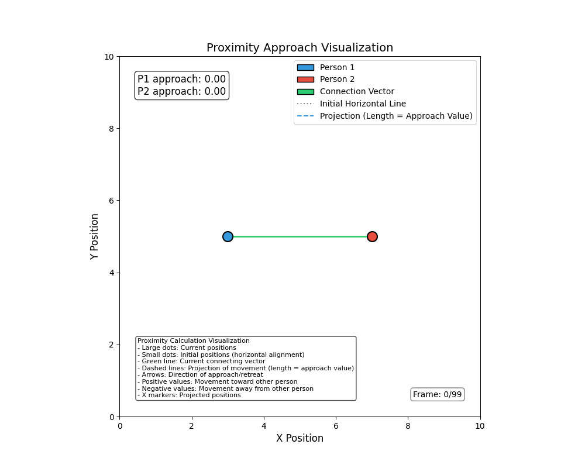

The following data has been made available in masked form.
Download Guide ⬇️
The masked data can be downloaded from the repository of Jagellonian University here. The unmasked data can be requested from the authors. The unmasked data is not available in this repository for privacy reasons.
2.0.1 Dataset Mother Infant
Code
import matplotlibmatplotlib.use('agg')import matplotlib.pyplot as pltplt.ioff()plt.clf() # Clear any existing figuresimport pandas as pdimport numpy as npimport os# Load the datadf = pd.read_csv('./meta/project_point_metadata_ages.csv')# Convert gender to categorical labeldf['gender_label'] = df['gender'].map({0: 'Female', 1: 'Male'})# Create a 2x2 subplot layoutfig, axs = plt.subplots(2, 2, figsize=(12, 10), gridspec_kw={'width_ratios': [1.5, 1], 'height_ratios': [1.5, 1]})fig.suptitle('Mother-Infant Dataset Overview', fontsize=16, fontfamily='serif')# Define colors for gendercolors = {'Female': '#C55A11', # Orange for females'Male': '#4472C4'# Blue for males}# 1. Line plot - Age progression across time pointsfor idx, row in df.iterrows(): gender = row['gender_label']# Create arrays for days and time points, handling NaN values days = [] timepoints = []for i inrange(1, 8): # T1 to T7 day_col =f'age_T{i}_days'if day_col in df.columns and pd.notna(row[day_col]) and row[day_col] >0: days.append(row[day_col]) timepoints.append(i)# Plot the line for this infant axs[0, 0].plot( timepoints, days, marker='o', color=colors[gender], alpha=0.5, linewidth=1.5 )# Customize the plotaxs[0, 0].set_xlabel('Time Point', fontfamily='serif')axs[0, 0].set_ylabel('Age (days)', fontfamily='serif')axs[0, 0].set_title('Infant Age Progression', fontfamily='serif')axs[0, 0].set_xticks(range(1, 8))axs[0, 0].set_xticklabels([f'T{i}'for i inrange(1, 8)])axs[0, 0].grid(True, alpha=0.3)# Add legend patchesfrom matplotlib.patches import Patchlegend_elements = [ Patch(facecolor=colors['Female'], edgecolor='w', label='Female'), Patch(facecolor=colors['Male'], edgecolor='w', label='Male')]axs[0, 0].legend(handles=legend_elements, loc='upper left')# 2. Box plot - Age distribution at each time pointtime_point_data = []labels = []for i inrange(1, 8): # T1 to T7 col =f'age_T{i}_days'if col in df.columns: valid_data = df[col].dropna()iflen(valid_data) >0: time_point_data.append(valid_data) labels.append(f'T{i}')# Create violin plotsif time_point_data: violin_parts = axs[0, 1].violinplot( time_point_data, showmeans=True, showmedians=True )# Color the violin plotsfor i, pc inenumerate(violin_parts['bodies']): pc.set_facecolor('#7030A0') # Purple pc.set_edgecolor('black') pc.set_alpha(0.7)# Set labelsaxs[0, 1].set_xticks(range(1, len(labels) +1))axs[0, 1].set_xticklabels(labels)axs[0, 1].set_xlabel('Time Point', fontfamily='serif')axs[0, 1].set_ylabel('Age (days)', fontfamily='serif')axs[0, 1].set_title('Age Distribution by Time Point', fontfamily='serif')axs[0, 1].grid(True, alpha=0.3, axis='y')# 3. Pie chart - Gender distributiongender_counts = df['gender_label'].value_counts()axs[1, 0].pie( gender_counts, labels=gender_counts.index, autopct='%1.1f%%', colors=[colors[g] for g in gender_counts.index], wedgeprops={'edgecolor': 'w', 'linewidth': 1})axs[1, 0].set_title('Gender Distribution', fontfamily='serif')# 4. Summary table# Calculate averages for each time point, handling NaN valuesaverages_days = []for i inrange(1, 8): col =f'age_T{i}_days'if col in df.columns: avg = df[col].mean()ifnot pd.isna(avg): avg_months = avg /30.44# Convert to months averages_days.append([f"T{i} Average Age", f"{avg:.1f} days ({avg_months:.1f} months)"])# Count participants at each time pointparticipants = []for i inrange(1, 8): col =f'age_T{i}_days'if col in df.columns: count = df[col].notna().sum() participants.append([f"Participants at T{i}", f"{count}"])# Overall statisticssummary_data = [ ["Total Infants", f"{len(df)}"], ["Females", f"{(df['gender'] ==0).sum()}"], ["Males", f"{(df['gender'] ==1).sum()}"]]# Add age ranges if columns existif'age_T1_days'in df.columns: summary_data.append(["Age Range T1", f"{df['age_T1_days'].min():.0f}-{df['age_T1_days'].max():.0f} days"])last_tp =7while last_tp >0: col =f'age_T{last_tp}_days'if col in df.columns and df[col].notna().sum() >0: summary_data.append([f"Age Range T{last_tp}", f"{df[col].min():.0f}-{df[col].max():.0f} days"])break last_tp -=1# Create the table with the most important summary statisticsaxs[1, 1].axis('off')table = axs[1, 1].table( cellText=summary_data + participants, loc='center', cellLoc='left')table.auto_set_font_size(False)table.set_fontsize(10)table.scale(1, 1.5)axs[1, 1].set_title('Dataset Summary', fontfamily='serif')plt.tight_layout()plt.subplots_adjust(top=0.9)# Save the figure to a fileoutput_path ="images/mother_infant_analysis.png"os.makedirs(os.path.dirname(output_path), exist_ok=True)plt.savefig(output_path, dpi=300, bbox_inches='tight')plt.close(fig) # Explicitly close the figure object
In our github repository we use a sample data from this dataset from an infant-mother pair whom we are allowed to share the video data for the current purposes.
2.0.2 Dataset Siblings
Code
import pandas as pdimport matplotlib.pyplot as pltimport numpy as npimport os# Load the datadf = pd.read_csv('./meta/project_siblings_metadata_ages_gender.csv')# Data preprocessingdf['AgeDifference'] =abs(df['P1agedays'] - df['P2agedays'])df['AverageAge'] = (df['P1agedays'] + df['P2agedays']) /2df['GenderCombo'] = df['GenderP1'] +'-'+ df['GenderP2']# Create a 2x2 subplot layoutfig, axs = plt.subplots(2, 2, figsize=(10, 8), gridspec_kw={'width_ratios': [1.5, 1], 'height_ratios': [1.5, 1]})fig.suptitle('Sibling Dataset Overview', fontsize=16, fontfamily='serif')# Define colors for gender combinationscolors = {'M-M': '#4472C4', # Blue'M-F': '#7030A0', # Purple'F-M': '#548235', # Green'F-F': '#C55A11'# Rust/Orange}# 1. Scatter plot - P1 age vs P2 agefor gender_combo, group in df.groupby('GenderCombo'): axs[0, 0].scatter( group['P1agedays'], group['P2agedays'], color=colors.get(gender_combo, 'gray'), alpha=0.7, label=gender_combo, s=50 )# Add reference linemin_age =min(df['P1agedays'].min(), df['P2agedays'].min())max_age =max(df['P1agedays'].max(), df['P2agedays'].max())axs[0, 0].plot([min_age, max_age], [min_age, max_age], 'k--', alpha=0.3)axs[0, 0].set_xlabel('P1 Age (days)', fontfamily='serif')axs[0, 0].set_ylabel('P2 Age (days)', fontfamily='serif')axs[0, 0].set_title('Participant Ages (P1 vs P2)', fontfamily='serif')axs[0, 0].grid(True, alpha=0.3)axs[0, 0].legend()# 2. Bar chart - Age differencesbar_positions = np.arange(len(df))bar_width =0.8axs[0, 1].bar( bar_positions, df['AgeDifference'], width=bar_width, color=[colors.get(combo, 'gray') for combo in df['GenderCombo']])axs[0, 1].set_xticks(bar_positions)axs[0, 1].set_xticklabels(df['Code'], rotation=90)axs[0, 1].set_xlabel('Sibling Pair', fontfamily='serif')axs[0, 1].set_ylabel('Age Difference (days)', fontfamily='serif')axs[0, 1].set_title('Age Differences by Sibling Pair', fontfamily='serif')axs[0, 1].grid(True, alpha=0.3, axis='y')# 3. Pie chart - Gender distributiongender_counts = df['GenderCombo'].value_counts()axs[1, 0].pie( gender_counts, labels=gender_counts.index, autopct='%1.1f%%', colors=[colors.get(combo, 'gray') for combo in gender_counts.index], wedgeprops={'edgecolor': 'w', 'linewidth': 1})axs[1, 0].set_title('Gender Distribution', fontfamily='serif')# 4. Summary tablesummary_data = [ ["Total Sibling Pairs", f"{len(df)}"], ["Average P1 Age", f"{df['P1agedays'].mean()/30:.1f} months"], ["Average P2 Age", f"{df['P2agedays'].mean()/30:.1f} months"], ["Average Age Difference", f"{df['AgeDifference'].mean()/30:.1f} months"], ["Number of Males", f"{(df['GenderP1'] =='M').sum() + (df['GenderP2'] =='M').sum()}"], ["Number of Females", f"{(df['GenderP1'] =='F').sum() + (df['GenderP2'] =='F').sum()}"]]# Turn off axis for tableaxs[1, 1].axis('off')table = axs[1, 1].table( cellText=[row for row in summary_data], colLabels=["Measure", "Value"], loc='center', cellLoc='left')table.auto_set_font_size(False)table.set_fontsize(10)table.scale(1, 1.5)axs[1, 1].set_title('Dataset Summary', fontfamily='serif')plt.tight_layout()plt.subplots_adjust(top=0.9)# Save the figure to a fileoutput_path ="images/sibling_analysis.png"os.makedirs(os.path.dirname(output_path), exist_ok=True)plt.savefig(output_path, dpi=300, bbox_inches='tight')plt.close()
Setting up 🛠️
3 Motion tracking and signal processing and wrangling
The motion tracking and signal processing pipeline is divided into two main steps: 1. Tracking: This step involves tracking the movements of individuals in the videos using a pose estimation model. The output is a video with annotated keypoints and a CSV file containing the coordinates of these keypoints. 2. Signal Processing: This step involves processing the keypoint data to extract relevant features for analysis. The output are processed timeseries files, and a flat dataset containing our smoothness measures that are directly ready for statistical analysis.
3.1 Step 1: Tracking two persons in videos for top-view (Python)
We have tried several pose tracking solutions, such as OpenPose (model 25B; Cao et al. (2021)), Mediapipe (default highest complexity blazepose model; Lugaresi et al. (2019)) and we found that these models are not well equipped to track persons from top view, most likely because these models are not trained on ground-truth poses of persons from top-view camera angles. However, we found the heaviest model of yolo v8 (“yolov8x-pose-p6.pt”) does perform very well, especially as compared to the other models we tested. Thus, for this pipeline we recommend using YOLOv8 model for top-view tracking.
Installation Guide 🛠️
3.1.1 Step 0: Github repo
We assume you have cloned the repository InterPerDynPipeline and are in the root directory. The step 1 code for tracking is in the ./code_STEP1_posetrackingprocessing/ folder. In this folder you will find the Python script yolo_tracking_processing.py. To check whether you have the correct script you can compare against the code chunk provided below.
3.1.2 Step 1: Install requirements
For each script we have provided a requirements.txt file. You can install the requirements using pip, by first navigating to the folder where the script is located and then running the following command in your terminal:
In the current GitHub repo we have a light-weight model yolov8n-pose.pt (~6.5MB) for immediate testing of the code. However, this model is not as accurate as the heaviest model.
We should download the heaviest model (yolov8x-pose-p6.pt) and save it to the ./code_STEP1_posetrackingprocessing/model/ directory:
https://github.com/ultralytics/assets/releases/download/v8.1.0/yolov8x-pose-p6.pt
Note: If you’re running the heavyweight model, you will need GPU support for this to run in a reasonable time. The lightweight model can run on CPU.
3.1.4 Step 3: Run the python script
Assuming you have videos in your data folder (./data_raw/) and you have a .pt model in the model folder, you can run the script using the following command:
The code below is the script yolo_tracking_processing.py that you can run to track the videos. The output will be a video with annotated keypoints and a CSV file containing the coordinates of these keypoints. The script processes each video frame-by-frame, detecting people and their pose keypoints (17 points as listed in the script; see the GetKeypoint class). We filter out duplicate detections or skeletons with excessive missing data. Specifically, for each processed video, the script generates two output files: an annotated video showing the original footage with skeleton overlays (green points for accepted keypoints, red for filtered ones, and blue lines connecting the points), and a CSV file containing the raw coordinate data (frame number, person ID, keypoint ID, x-coordinate, y-coordinate). The output filenames include parameters like “c150” (150px proximity threshold) and “miss95” (95% missing data tolerance), which control how the system handles potential duplicate detections and incomplete skeletons. The user could adjust the parameter close_threshold and miss_tolerance to adjust the detection dynamics. We output the annotated video and the CSV file in the ./datatracked_afterSTEP1/ folder.
Code
from ultralytics import YOLOfrom pydantic import BaseModelimport cv2import csvimport numpy as npimport globimport osimport torch # for gpu supportfrom itertools import combinationsimport systorch.cuda.set_device(0)# Load the modelmodelfolder ='./model/'modellocation = glob.glob(modelfolder+"*.pt")[0]modelfile = os.path.basename(modellocation)print(f"We are loading in the following YOLO model: {modelfile}")model = YOLO(modellocation)# main variablesvideo_folder ="../data_raw/"# avi mp4 or other video formatsvideo_files = glob.glob(video_folder +"*.mp4") + glob.glob(video_folder +"*.avi") + glob.glob(video_folder +"*.mov") + glob.glob(video_folder +"*.mkv")step1resultfolder ="../datatracked_afterSTEP1/"print(video_files)# keypoint namesclass GetKeypoint(BaseModel): NOSE: int=0 LEFT_EYE: int=1 RIGHT_EYE: int=2 LEFT_EAR: int=3 RIGHT_EAR: int=4 LEFT_SHOULDER: int=5 RIGHT_SHOULDER: int=6 LEFT_ELBOW: int=7 RIGHT_ELBOW: int=8 LEFT_WRIST: int=9 RIGHT_WRIST: int=10 LEFT_HIP: int=11 RIGHT_HIP: int=12 LEFT_KNEE: int=13 RIGHT_KNEE: int=14 LEFT_ANKLE: int=15 RIGHT_ANKLE: int=16get_keypoint = GetKeypoint()# Define skeleton connectionsskeleton = [ (get_keypoint.LEFT_SHOULDER, get_keypoint.RIGHT_SHOULDER), (get_keypoint.LEFT_SHOULDER, get_keypoint.LEFT_ELBOW), (get_keypoint.RIGHT_SHOULDER, get_keypoint.RIGHT_ELBOW), (get_keypoint.LEFT_ELBOW, get_keypoint.LEFT_WRIST), (get_keypoint.RIGHT_ELBOW, get_keypoint.RIGHT_WRIST), (get_keypoint.LEFT_SHOULDER, get_keypoint.LEFT_HIP), (get_keypoint.RIGHT_SHOULDER, get_keypoint.RIGHT_HIP), (get_keypoint.LEFT_HIP, get_keypoint.RIGHT_HIP), (get_keypoint.LEFT_HIP, get_keypoint.LEFT_KNEE), (get_keypoint.RIGHT_HIP, get_keypoint.RIGHT_KNEE), (get_keypoint.LEFT_KNEE, get_keypoint.LEFT_ANKLE), (get_keypoint.RIGHT_KNEE, get_keypoint.RIGHT_ANKLE),]def tensor_to_matrix(results_tensor):# this just takes the results output of YOLO and coverts it to a matrix,# making it easier to do quick calculations on the coordinates results_list = results_tensor.tolist() results_matrix = np.matrix(results_list) results_matrix[results_matrix==0] = np.nanreturn results_matrixdef check_for_duplication(results):# this threshold determines how close two skeletons must be in order to be# considered the same person. Arbitrarily chosen for now. close_threshold =150# missing data tolerance miss_tolerance =0.95# this means we can miss up to 75% of the keypoints drop_indices = []iflen(results[0].keypoints.xy) >1: conf_scores = []# get detection confidence for each skeletonfor person in tensor_to_matrix(results[0].keypoints.conf): conf_scores.append(np.mean(person))# this list will stores which comparisons need to be made combos =list(combinations(range(len(results[0].keypoints.xy)), 2))# now loop through these comparisonsfor combo in combos: closeness =abs(np.nanmean(tensor_to_matrix(results[0].keypoints.xy[combo[0]]) - tensor_to_matrix(results[0].keypoints.xy[combo[1]])))# if any of them indicate that two skeletons are very close together,# we keep the one with higher tracking confidence, and remove the otherif closeness < close_threshold: conf_list = [conf_scores[combo[0]], conf_scores[combo[1]]] idx_min = conf_list.index(min(conf_list)) drop_indices.append(combo[idx_min])# additional checks:for person inrange(len(results[0].keypoints.xy)): keypoints_missed = np.isnan(tensor_to_matrix(results[0].keypoints.xy[person])).sum()/2 perc_missed = keypoints_missed/len(tensor_to_matrix(results[0].keypoints.xy[person]))if perc_missed > miss_tolerance: drop_indices.append(person)returnlist(set(drop_indices))for video_path in video_files:# Video path video_path = video_path# only if the output is not there yetif os.path.exists(step1resultfolder+ os.path.basename(video_path).split('.')[0]+"_annotated_layer1_c150_miss95.mp4"):print(f"Output video already exists for {video_path}. Skipping...")continue# vidname without extension vidname = os.path.basename(video_path) vidname = vidname.split('.')[0]# Open the video cap = cv2.VideoCapture(video_path)# Get video properties fps =int(cap.get(cv2.CAP_PROP_FPS)) width =int(cap.get(cv2.CAP_PROP_FRAME_WIDTH)) height =int(cap.get(cv2.CAP_PROP_FRAME_HEIGHT))# Define the output video writer corename = os.path.basename(video_path).split('.')[0] output_path = step1resultfolder+ vidname+"_annotated_layer1_c150_miss95.mp4" fourcc = cv2.VideoWriter_fourcc(*'mp4v') out = cv2.VideoWriter(output_path, fourcc, fps, (width, height))# Prepare CSV file csv_path = step1resultfolder+ vidname+'_keypoints_data_layer1.csv' csv_file =open(csv_path, 'w', newline='') csv_writer = csv.writer(csv_file)# Write header header = ['frame', 'person', 'keypoint', 'x', 'y'] csv_writer.writerow(header) frame_count =0while cap.isOpened(): success, frame = cap.read()ifnot success:break# Run YOLOv8 inference on the frame results = model(frame)# write empty rows if no person is detectediflen(results[0].keypoints.xy) ==0: csv_writer.writerow([frame_count, None, None, None, None]) annotated_frame = frame# only do this if a person is detectediflen(results[0].keypoints.xy) >0:# Process the results drop_indices = [] drop_indices = check_for_duplication(results)for person_idx, person_keypoints inenumerate(results[0].keypoints.xy):if person_idx notin drop_indices: colourcode = (0, 255, 0)else: colourcode = (255, 0, 0)for keypoint_idx, keypoint inenumerate(person_keypoints): x, y = keypoint# Write to CSV csv_writer.writerow([frame_count, person_idx, keypoint_idx, x.item(), y.item()])# Draw keypoint on the frame cv2.circle(annotated_frame, (int(x), int(y)), 5, colourcode, -1)# Draw skeletonfor connection in skeleton:if connection[0] <len(person_keypoints) and connection[1] <len(person_keypoints): start_point =tuple(map(int, person_keypoints[connection[0]])) end_point =tuple(map(int, person_keypoints[connection[1]]))ifall(start_point) andall(end_point): # Check if both points are valid cv2.line(annotated_frame, start_point, end_point, (255, 0, 0), 2)# Write the frame to the output video out.write(annotated_frame) frame_count +=1# Release everything cap.release() out.release() cv2.destroyAllWindows() csv_file.close()print(f"Output video saved as {output_path}")print(f"Keypoints data saved as {csv_path}")
Here is an example of the output video with annotated keypoints and skeletons. The green points indicate accepted keypoints, while the red points indicate filtered ones. The blue lines connect the keypoints to form a skeleton.
Here is an example of the output csv file containing the coordinates of the keypoints. The CSV file contains the following columns: frame number, person ID, keypoint ID, x-coordinate, and y-coordinate. Each row corresponds to a detected keypoint in a specific frame.
Code
import pandas as pdimport glob as globfolderstep1output ="./data_tracked_afterSTEP1/"# Load the CSV filecsv_file = glob.glob(folderstep1output +"*.csv")[0]df = pd.read_csv(csv_file)# Display the first few rows of the DataFrameprint(df.head())
3.2 Step 2: Raw pose data post-processing for timeseries matrices (Python)
The raw pose data with frame, person, keypoint, and x,y position data that we end up with is not yet in a format that is easy to work with for our purposes. Additionally, sometimes we dont have a person or two persons detected in the frame. We want to transform these raw pose data to timeseries matrix format, whereby we have time in seconds as one column and different meaningful time-varying variables in the other columns. Furthermore, we will smooth and interpolate the data if necessary. The below python code executes this second step whereby we store the position data per person, and furthe derive interpersonal distances measures, and kinematic metrics (e.g. speed) and tracking quality indicators (e.g. tracking status that says something about where it concerns interpolated data).
Next to determining time in seconds from the frame rate of the videos, the script starts with assigning left and right person IDs based on the horizontal position in the frame (with left being ID 1 and right being ID 2). It then processes the time data to calculate statistics for tracked people using upper body keypoints (as the lower body keypoints are unreliable from top-view and may be ignored). Specifically, we reduce the dimensionality of all upper body keypoints by determined relative positions and their distances: We calculate a bounding box (determined by the outer edges of the keypoints) and determine the center in x and y coordinates (centroid_x, centroid_y) and their P1-P2 distance of those centroids (distance), and the center of mass (com_x, com_y) for each person and the distnace (distance_com). Further we determine the midpoint of the shoulders as another relevant position (shoulder_midpoint_x, shoulder_midpoint_y) and compute its distance (distance_shoulder_midpoint). Additionally, information about body parts such as arm motions by taking the wrist positions (wrist_left_x, wrist_left_y, wrist_right_x, wrist_right_y), and further deriving total motion per second, called speed (based on a euclidean sum of the changes of position along x and y).
The Savitzky-Golay filter is applied for smoothing jittering position data (using a window size of 11 frames, polynomial order of 3). The script handles missing data through two complementary techniques: linear interpolation for brief gaps in tracking (up to 5 frames) and we take the last known location for longer gaps (up to 20 frames). The script also calculates the speed of the center of mass and wrist positions, and here we also smooth the values using the Savitzky-Golay filter to reduce noise that is amplified during differientation (see Winter (2009)).
The more sophisticated measure that we have created is the proximity calculation measure (see function calculate_approach() in the step2 script). This function establishes initial reference position for both participants and then projects their subsequent movements onto the connecting line between them. This allows for quantifying approach and retreat behaviors for each person seperately (which a distance measure does not allow for) while allowing for relative angle changes between them - positive values indicate movement toward the other person (relative from start), while negative values indicate withdrawal (relative from start).
Below is an animation to what we are measuring. We are here capturing only movements that are changing the distance between them. When someone moves in a circle around the other person we want to make sure we do not register that as approach or retreat (which we would do if we just capture horizontal position for example). However we also want capture each person their own approach/avoidance value (which would not be possible when using a simple distance measure). By always measuring the signed length of the projected line from the initial position (based on the current connected position), the method tracks cumulative approach/avoidance for each person over time.
Code
import numpy as npimport matplotlib.pyplot as pltfrom matplotlib.animation import FuncAnimationimport matplotlib.patches as patchesimport matplotlib.lines as mlinesimport osimport matplotlib# Force matplotlib to use Agg backend to avoid display issuesmatplotlib.use('Agg')# Create output directory if it doesn't existos.makedirs("images/proximity_visualization", exist_ok=True)# Simulation parametersnum_frames =100p1_color ='#3498db'# Bluep2_color ='#e74c3c'# Redvector_color ='#2ecc71'# Green# Create initial positions for two people - now on a horizontal line# Person 1 on the left, Person 2 on the right (same y-coordinate)p1_initial = np.array([3, 5])p2_initial = np.array([7, 5])# Generate movement paths with MORE EXTREME approach and avoidance# Person 1 will make a dramatic approach followed by retreat# Person 2 will make a clear retreat followed by approacht = np.linspace(0, 2*np.pi, num_frames)# Create more dramatic movement path for Person 1# Increase the amplitude of movement to make it more extremep1_path_x = p1_initial[0] +2.5* np.sin(t/2) # Larger horizontal movement (was 1.5)p1_path_y = p1_initial[1] +2.5* np.sin(t) # Larger vertical movement (was 2.0)# Create more dramatic movement path for Person 2# Make the retreat phase more obviousp2_path_x = p2_initial[0] -1.2* np.sin(t) # More horizontal movement (was 0.5)p2_path_y = p2_initial[1] -2.0* np.sin(t*1.5) # More vertical movement (was 1.0)# Store positions for each framep1_positions = np.column_stack((p1_path_x, p1_path_y))p2_positions = np.column_stack((p2_path_x, p2_path_y))# Arrays to store approach valuesp1_approach_values = np.zeros(num_frames)p2_approach_values = np.zeros(num_frames)# Calculate proximity approach valuesdef calculate_approach(positions1, positions2):"""Calculate approach values similar to the script's approach"""# Use first frame as reference reference_p1_pos = positions1[0].copy() reference_p2_pos = positions2[0].copy() p1_approach = np.zeros(len(positions1)) p2_approach = np.zeros(len(positions2))for i inrange(len(positions1)):# Current positions p1_pos = positions1[i] p2_pos = positions2[i]# Current connecting vector and direction current_connect = p2_pos - p1_pos current_distance = np.linalg.norm(current_connect)if current_distance >0: current_direction = current_connect / current_distance# Vectors from reference positions p1_vector = p1_pos - reference_p1_pos p2_vector = p2_pos - reference_p2_pos# Project onto connecting line p1_approach[i] = np.dot(p1_vector, current_direction)# For P2, a positive value should mean movement toward P1# So we use the negative connecting direction (from P2 to P1)# And a positive dot product means approaching p2_direction =-current_direction # Direction from P2 to P1 p2_approach[i] = np.dot(p2_vector, p2_direction)return p1_approach, p2_approach# Calculate approach valuesp1_approach_values, p2_approach_values = calculate_approach(p1_positions, p2_positions)# Create the main visualizationdef create_detailed_animation():# Set up the figure explicitly with DPI fig, ax = plt.subplots(figsize=(12, 10), dpi=100) # Larger figure for better visibilitydef init(): ax.clear() ax.set_xlim(0, 10) ax.set_ylim(0, 10) ax.set_aspect('equal')return []def animate(i): ax.clear()# Set up the axes ax.set_xlim(0, 10) ax.set_ylim(0, 10) ax.set_aspect('equal') ax.set_title('Proximity Approach Visualization (Extreme Movements)', fontsize=16) ax.set_xlabel('X Position', fontsize=12) ax.set_ylabel('Y Position', fontsize=12)# Get current positions p1_pos = p1_positions[i] p2_pos = p2_positions[i]# Draw the initial connecting vector (reference) ax.plot([p1_positions[0][0], p2_positions[0][0]], [p1_positions[0][1], p2_positions[0][1]], color=vector_color, linewidth=1, linestyle='--', alpha=0.5, zorder=0)# Draw the current connection vector ax.plot([p1_pos[0], p2_pos[0]], [p1_pos[1], p2_pos[1]], color=vector_color, linewidth=2.5, linestyle='-', zorder=1)# Draw person markers ax.scatter(p1_pos[0], p1_pos[1], s=180, color=p1_color, edgecolor='black', linewidth=1.5, zorder=3) ax.scatter(p2_pos[0], p2_pos[1], s=180, color=p2_color, edgecolor='black', linewidth=1.5, zorder=3)# Draw initial positions ax.scatter(p1_positions[0][0], p1_positions[0][1], s=90, color=p1_color, alpha=0.5, edgecolor='black', linewidth=1, zorder=2) ax.scatter(p2_positions[0][0], p2_positions[0][1], s=90, color=p2_color, alpha=0.5, edgecolor='black', linewidth=1, zorder=2)# Draw trails (last 15 positions) start_idx =max(0, i-15) ax.plot(p1_positions[start_idx:i+1, 0], p1_positions[start_idx:i+1, 1], '-', color=p1_color, alpha=0.5, linewidth=2) ax.plot(p2_positions[start_idx:i+1, 0], p2_positions[start_idx:i+1, 1], '-', color=p2_color, alpha=0.5, linewidth=2)# Visualize the approach values with text - make them larger and more visible approach_text = (f"P1 approach: {p1_approach_values[i]:.2f}\n"f"P2 approach: {p2_approach_values[i]:.2f}") ax.text(0.05, 0.95, approach_text, transform=ax.transAxes, verticalalignment='top', fontsize=14, fontweight='bold', bbox=dict(boxstyle='round', facecolor='white', alpha=0.9))# Add projection visualizationif i >0:# Get current connecting direction connect_vector = p2_pos - p1_pos connect_distance = np.linalg.norm(connect_vector) connect_direction = connect_vector / connect_distance# Person 1 projection p1_vector = p1_pos - p1_positions[0] p1_projection = np.dot(p1_vector, connect_direction) * connect_direction# Draw projection line for P1 p1_proj_point = p1_positions[0] + p1_projection# Person 2 projection - use direction from P2 to P1 p2_vector = p2_pos - p2_positions[0] p2_direction =-connect_direction # Direction from P2 to P1 p2_projection = np.dot(p2_vector, p2_direction) * p2_direction# Draw projection line for P2 p2_proj_point = p2_positions[0] + p2_projection# Draw projection lines with arrows to show direction# For P1 p1_approach = p1_approach_values[i]ifabs(p1_approach) >0.1: # Only draw if there's a significant approach value# Draw line with increased width ax.plot([p1_positions[0][0], p1_proj_point[0]], [p1_positions[0][1], p1_proj_point[1]], '--', color=p1_color, linewidth=2.5)# Add arrow to show direction - make arrow larger arrow_length =min(abs(p1_approach) *0.2, 0.6) # Scale arrow size arrow_width =0.15if p1_approach >0: # Approaching# Arrow pointing from initial position toward projection point ax.arrow(p1_positions[0][0], p1_positions[0][1], arrow_length * connect_direction[0], arrow_length * connect_direction[1], head_width=arrow_width, head_length=arrow_width*1.5, fc=p1_color, ec='black', linewidth=1, zorder=4)else: # Retreating# Arrow pointing from initial position away from projection point ax.arrow(p1_positions[0][0], p1_positions[0][1], -arrow_length * connect_direction[0], -arrow_length * connect_direction[1], head_width=arrow_width, head_length=arrow_width*1.5, fc=p1_color, ec='black', linewidth=1, zorder=4)# Add value label near the projection line mid_x = (p1_positions[0][0] + p1_proj_point[0]) /2 mid_y = (p1_positions[0][1] + p1_proj_point[1]) /2 ax.text(mid_x, mid_y, f"{p1_approach:.2f}", color=p1_color, fontsize=10, fontweight='bold', bbox=dict(facecolor='white', alpha=0.7, boxstyle='round,pad=0.2'))# For P2 p2_approach = p2_approach_values[i]ifabs(p2_approach) >0.1: # Only draw if there's a significant approach value# Draw line with increased width ax.plot([p2_positions[0][0], p2_proj_point[0]], [p2_positions[0][1], p2_proj_point[1]], '--', color=p2_color, linewidth=2.5)# Add arrow to show direction - make arrow larger arrow_length =min(abs(p2_approach) *0.2, 0.6) # Scale arrow size arrow_width =0.15if p2_approach >0: # Approaching# Arrow pointing from initial position toward P1 ax.arrow(p2_positions[0][0], p2_positions[0][1], arrow_length * p2_direction[0], arrow_length * p2_direction[1], head_width=arrow_width, head_length=arrow_width*1.5, fc=p2_color, ec='black', linewidth=1, zorder=4)else: # Retreating# Arrow pointing from initial position away from P1 ax.arrow(p2_positions[0][0], p2_positions[0][1], -arrow_length * p2_direction[0], -arrow_length * p2_direction[1], head_width=arrow_width, head_length=arrow_width*1.5, fc=p2_color, ec='black', linewidth=1, zorder=4)# Add value label near the projection line mid_x = (p2_positions[0][0] + p2_proj_point[0]) /2 mid_y = (p2_positions[0][1] + p2_proj_point[1]) /2 ax.text(mid_x, mid_y, f"{p2_approach:.2f}", color=p2_color, fontsize=10, fontweight='bold', bbox=dict(facecolor='white', alpha=0.7, boxstyle='round,pad=0.2'))# Add small markers at projection points ax.scatter(p1_proj_point[0], p1_proj_point[1], color=p1_color, s=70, marker='x') ax.scatter(p2_proj_point[0], p2_proj_point[1], color=p2_color, s=70, marker='x')# Draw horizontal dotted line at initial y-coordinate to emphasize horizontal start ax.axhline(y=p1_initial[1], color='gray', linestyle=':', alpha=0.5)# Add legend legend_elements = [ patches.Patch(facecolor=p1_color, edgecolor='black', label='Person 1'), patches.Patch(facecolor=p2_color, edgecolor='black', label='Person 2'), patches.Patch(facecolor=vector_color, edgecolor='black', label='Connection Vector'), mlines.Line2D([], [], color='gray', linestyle=':', label='Initial Horizontal Line'), mlines.Line2D([], [], color=p1_color, linestyle='--', linewidth=2, label='Projection Length = Approach Value') ] ax.legend(handles=legend_elements, loc='upper right', fontsize=10)# Add a frame counter ax.text(0.95, 0.05, f"Frame: {i}/{num_frames-1}", transform=ax.transAxes, horizontalalignment='right', verticalalignment='bottom', fontsize=10, bbox=dict(boxstyle='round', facecolor='white', alpha=0.5))# Add description text description = ("Proximity Calculation Visualization\n""- Large dots: Current positions\n""- Small dots: Initial positions (horizontal alignment)\n""- Green line: Current connecting vector\n""- Dashed lines: Projection of movement (length = approach value)\n""- Arrows: Direction of approach/retreat\n""- Positive values: Movement toward other person\n""- Negative values: Movement away from other person\n""- X markers: Projected positions" ) ax.text(0.05, 0.05, description, transform=ax.transAxes, verticalalignment='bottom', fontsize=9, bbox=dict(boxstyle='round', facecolor='white', alpha=0.7))return []# Create the animation with explicit FPS and DPI ani = FuncAnimation(fig, animate, frames=num_frames, init_func=init, blit=True, interval=100)# Save the animation as a GIF with explicit DPI ani.save('images/proximity_visualization/proximity_calculation_extreme.gif', writer='pillow', fps=10, dpi=100) plt.close(fig)# Run the animationtry:print("Creating animation...") create_detailed_animation()print("GIF created successfully in the 'images/proximity_visualization' folder.")exceptExceptionas e:print(f"Error creating animation: {e}")# Alternative approach if the above fails - create static framesprint("Trying alternative approach with static frames...")try:# Create a static image sequence instead os.makedirs("images/proximity_visualization/frames", exist_ok=True)# Create 10 static frames instead of full animation sample_frames = np.linspace(0, num_frames-1, 10, dtype=int)for idx, i inenumerate(sample_frames): fig, ax = plt.subplots(figsize=(10, 8), dpi=100)# Set up the axes ax.set_xlim(0, 10) ax.set_ylim(0, 10) ax.set_title(f'Proximity Calculation (Frame {i})', fontsize=14)# Get current positions p1_pos = p1_positions[i] p2_pos = p2_positions[i]# Draw the connection vector ax.plot([p1_pos[0], p2_pos[0]], [p1_pos[1], p2_pos[1]], color=vector_color, linewidth=2)# Draw person markers ax.scatter(p1_pos[0], p1_pos[1], s=150, color=p1_color, label='Person 1') ax.scatter(p2_pos[0], p2_pos[1], s=150, color=p2_color, label='Person 2')# Draw initial positions ax.scatter(p1_positions[0][0], p1_positions[0][1], s=50, color=p1_color, alpha=0.5) ax.scatter(p2_positions[0][0], p2_positions[0][1], s=50, color=p2_color, alpha=0.5)# Draw horizontal dotted line at initial y-coordinate ax.axhline(y=p1_initial[1], color='gray', linestyle=':', alpha=0.5)# Show approach values ax.text(0.5, 0.95, f"Person 1 approach: {p1_approach_values[i]:.2f}", transform=ax.transAxes, ha='center', va='top', bbox=dict(boxstyle='round', facecolor=p1_color, alpha=0.3)) ax.text(0.5, 0.9, f"Person 2 approach: {p2_approach_values[i]:.2f}", transform=ax.transAxes, ha='center', va='top', bbox=dict(boxstyle='round', facecolor=p2_color, alpha=0.3)) ax.legend()# Save the frame plt.tight_layout() plt.savefig(f'images/proximity_visualization/frames/frame_{idx:02d}.png') plt.close(fig)print("Static frames created successfully in 'images/proximity_visualization/frames' folder.")exceptExceptionas e:print(f"Alternative approach also failed: {e}")
Creating animation...
GIF created successfully in the 'images/proximity_visualization' folder.

Proximity Calculation Visualization
We further check for any remaining missing values after processing and confirms time continuity to detect any frame drops or temporal misalignments.
The output of this script is a timeseries matrix for each video, which contains the time in seconds and the calculated variables. The timeseries matrices are saved in the ./data_timeseries_afterSTEP2/ folder. The code below is the script STEP2_process_timeseries.py that you can run to process the raw pose data.
Code
import pandas as pdimport numpy as npimport globimport osimport cv2import mathfrom bisect import bisect_leftfrom scipy.signal import savgol_filter# Path DefinitionsINPUT_LAYER1_PATH ='../data_tracked_afterSTEP1/'# Input directory containing tracked keypoint data from STEP1VIDEO_PATH ="../data_raw/"# Raw video files directoryOUTPUT_PATH ='../data_timeseries_afterSTEP2/'# Output directory for processed timeseries data# Variable Explanations:# =====================================================# Positional Variables:# - x, y: 2D coordinates in the image frame# - x_min, x_max, y_min, y_max: Bounding box coordinates for a person# - centroid_x, centroid_y: Center point of a person's bounding box# - com_x, com_y: Center of mass for a person (average of upper body keypoint positions)# - shoulder_midpoint_*: Midpoint between left and right shoulders for each person (p1, p2)# - wrist_left_*, wrist_right_*: Positions of left and right wrists for each person (p1, p2)## Distance Variables:# - distance: Euclidean distance between the centroids of both people# - distance_com: Euclidean distance between centers of mass of both people# - distance_shoulder_midpoint: Distance between shoulder midpoints of both people# - *_speed: Euclidean speed of different body parts (calculated from position differences)# - *_speed_smooth: Smoothed version of speed using Savitzky-Golay filter## Movement Analysis:# - p1_com_approach_pos, p2_com_approach_pos: Position of each person's COM relative to their# initial position, projected onto the connecting line between people. Positive values # indicate movement toward the other person.## Tracking Status:# - both_tracked: Boolean indicating if both people are tracked in the current frame# - single_tracked: Boolean indicating if only one person is tracked in the current frame# =====================================================def frame_to_time(ts, fps):"""Convert frame numbers to time in seconds""" ts["time"] = [row[1]["frame"] / fps for row in ts.iterrows()]return tsdef take_closest(myList, myNumber):""" Assumes myList is sorted. Returns closest value to myNumber. If two numbers are equally close, return the smallest number. """ pos = bisect_left(myList, myNumber)if pos ==0:return myList[0]if pos ==len(myList):return myList[-1] before = myList[pos -1] after = myList[pos]if after - myNumber < myNumber - before:return afterelse:return beforedef assign_left_right(ts):"""Assign person IDs (0 or 1) based on x-position in the frame""" min_x = np.min([val for val in ts['x'] if val !=0]) max_x = np.max([val for val in ts['x'] if val !=0])for index, row in ts.iterrows():if row['x'] ==0: # Skip untracked pointscontinueif take_closest([min_x, max_x], row['x']) == min_x: ts.loc[index, 'person'] =0# Left personelse: ts.loc[index, 'person'] =1# Right personreturn tsdef process_time_data(ts):"""Calculate statistics for tracked people using upper body keypoints""" ts_upper = ts[ts['keypoint'] <11] # Filter to upper body keypoints only# Calculate stats per person and time stats = ts_upper.groupby(['time', 'person']).agg({'x': ['min', 'max', 'mean'],'y': ['min', 'max', 'mean'] }).reset_index() stats.columns = ['time', 'person', 'x_min', 'x_max', 'com_x', 'y_min', 'y_max', 'com_y'] stats['centroid_x'] = (stats['x_min'] + stats['x_max']) /2 stats['centroid_y'] = (stats['y_min'] + stats['y_max']) /2return statsdef process_people_data_vectorized(ts, stats):""" Process keypoint data to calculate relative positions and distances. Preserves time alignment and handles COM/centroid assignment. """# Get all unique times from the original data all_times =sorted(ts['time'].unique()) result = pd.DataFrame(index=all_times) result.index.name ='time'# Process shoulders first (keypoints 5 and 6) shoulders = ts[ts['keypoint'].isin([5, 6])].groupby(['time', 'person']).agg({'x': 'mean','y': 'mean' }).reset_index()# Process wrists (keypoints 7 and 8) wrists = ts[ts['keypoint'].isin([7, 8])].pivot_table( index=['time', 'person'], columns='keypoint', values=['x', 'y'] ).reset_index() wrists.columns = ['time', 'person', 'left_x', 'right_x', 'left_y', 'right_y']# Get person-specific data p0_stats = stats[stats['person'] ==0].set_index('time') p1_stats = stats[stats['person'] ==1].set_index('time')# Process distances where both people exist common_times =sorted(set(p0_stats.index) &set(p1_stats.index))if common_times: # Only calculate if we have common times result.loc[common_times, 'distance'] = np.sqrt( (p0_stats.loc[common_times, 'centroid_x'] - p1_stats.loc[common_times, 'centroid_x'])**2+ (p0_stats.loc[common_times, 'centroid_y'] - p1_stats.loc[common_times, 'centroid_y'])**2 ) result.loc[common_times, 'distance_com'] = np.sqrt( (p0_stats.loc[common_times, 'com_x'] - p1_stats.loc[common_times, 'com_x'])**2+ (p0_stats.loc[common_times, 'com_y'] - p1_stats.loc[common_times, 'com_y'])**2 )# Process shoulders per personfor person, prefix in [(0, 'p1'), (1, 'p2')]: s_person = shoulders[shoulders['person'] == person].set_index('time') result[f'shoulder_midpoint_{prefix}_x'] = s_person['x'] result[f'shoulder_midpoint_{prefix}_y'] = s_person['y']# Calculate shoulder midpoint distance where possible shoulder_cols = ['shoulder_midpoint_p1_x', 'shoulder_midpoint_p2_x','shoulder_midpoint_p1_y', 'shoulder_midpoint_p2_y'] shoulder_mask = result[shoulder_cols].notna().all(axis=1)if shoulder_mask.any(): result.loc[shoulder_mask, 'distance_shoulder_midpoint'] = np.sqrt( (result.loc[shoulder_mask, 'shoulder_midpoint_p1_x'] - result.loc[shoulder_mask, 'shoulder_midpoint_p2_x'])**2+ (result.loc[shoulder_mask, 'shoulder_midpoint_p1_y'] - result.loc[shoulder_mask, 'shoulder_midpoint_p2_y'])**2 )# Process wrists per person and add COM/centroidfor person, prefix in [(0, 'p1'), (1, 'p2')]: w_person = wrists[wrists['person'] == person].set_index('time') result[f'wrist_left_{prefix}_x'] = w_person['left_x'] result[f'wrist_left_{prefix}_y'] = w_person['left_y'] result[f'wrist_right_{prefix}_x'] = w_person['right_x'] result[f'wrist_right_{prefix}_y'] = w_person['right_y']# Use the correct stats object based on person ID person_stats = p0_stats if person ==0else p1_stats# Add com and centroid with the correct stats object result[f'com_{prefix}_x'] = person_stats['com_x'] result[f'com_{prefix}_y'] = person_stats['com_y'] result[f'centroid_{prefix}_x'] = person_stats['centroid_x'] result[f'centroid_{prefix}_y'] = person_stats['centroid_y']# Add tracking quality indicators using original data person_counts = ts.groupby('time')['person'].nunique() result['both_tracked'] = result.index.map(lambda x: person_counts.get(x, 0) ==2) result['single_tracked'] = result.index.map(lambda x: person_counts.get(x, 0) ==1)return resultdef calculate_proximity_approach(timeseries_data):""" Calculate each person's position relative to their initial position, projecting movement onto the current connecting line between people. This handles rotation and changing spatial relationships between people. Positive values indicate movement toward the other person from initial position. The reference positions are only established when both people are detected. """# Create columns for our measurementsif'p1_com_approach_pos'notin timeseries_data.columns: timeseries_data['p1_com_approach_pos'] = np.nanif'p2_com_approach_pos'notin timeseries_data.columns: timeseries_data['p2_com_approach_pos'] = np.nan# Sort data by time sorted_data = timeseries_data.sort_values('time')# Find first valid frame to establish reference positions reference_p1_pos =None reference_p2_pos =None reference_distance =None# First pass: find reference frame where both people are detectedfor idx, row in sorted_data.iterrows():# Skip rows with NaN values or where both_tracked is Falseif (np.isnan(row['com_p1_x']) or np.isnan(row['com_p1_y']) or np.isnan(row['com_p2_x']) or np.isnan(row['com_p2_y']) or ('both_tracked'in row.index and row['both_tracked'] ==False)):continue# Get positions for this frame p1_pos = np.array([row['com_p1_x'], row['com_p1_y']]) p2_pos = np.array([row['com_p2_x'], row['com_p2_y']])# Calculate connecting vector connect_vector = p2_pos - p1_pos distance = np.linalg.norm(connect_vector)if distance >0:# We found a valid reference frame reference_p1_pos = p1_pos.copy() reference_p2_pos = p2_pos.copy() reference_distance = distanceprint(f"Reference frame established at time={row['time']}")print(f" Reference p1_pos: {reference_p1_pos}")print(f" Reference p2_pos: {reference_p2_pos}")print(f" Reference distance: {reference_distance}")breakif reference_p1_pos isNone:print("ERROR: Could not establish a reference frame. No valid frames found with both people detected.")return timeseries_data# Second pass: calculate projected positions for all framesfor idx, row in sorted_data.iterrows():# Skip rows with NaN valuesif (np.isnan(row['com_p1_x']) or np.isnan(row['com_p1_y']) or np.isnan(row['com_p2_x']) or np.isnan(row['com_p2_y'])):continue# Get current positions p1_pos = np.array([row['com_p1_x'], row['com_p1_y']]) p2_pos = np.array([row['com_p2_x'], row['com_p2_y']])# Calculate current connecting vector and direction current_connect = p2_pos - p1_pos current_distance = np.linalg.norm(current_connect)# Skip frames where people are at the same positionif current_distance ==0:continue current_direction = current_connect / current_distance# Calculate vector from reference position to current position p1_vector = p1_pos - reference_p1_pos p2_vector = p2_pos - reference_p2_pos# Project these vectors onto the current connecting line# Positive values mean moving toward the other person p1_projection = np.dot(p1_vector, current_direction) p2_projection =-np.dot(p2_vector, -current_direction)# Store values timeseries_data.loc[idx, 'p1_com_approach_pos'] = p1_projection timeseries_data.loc[idx, 'p2_com_approach_pos'] = p2_projection# Verify results filled_p1 = timeseries_data['p1_com_approach_pos'].notna().sum() filled_p2 = timeseries_data['p2_com_approach_pos'].notna().sum()print(f"Frames with filled values - p1: {filled_p1}, p2: {filled_p2}")return timeseries_datadef main():"""Main processing function"""# Create output directory if it doesn't exist os.makedirs(OUTPUT_PATH, exist_ok=True)# Get all CSV files from layer 1 processing layer1_files = glob.glob(INPUT_LAYER1_PATH +'*.csv')# Process each filefor file_path in layer1_files:# Extract video name from file path vid_name = os.path.basename(file_path).split('_keypoints_data_layer1.csv')[0]print(f"Processing video: {vid_name}")# Check if already processed output_file =f"{OUTPUT_PATH}/{vid_name}_processed_data_layer2.csv"if os.path.exists(output_file):print("Already processed, skipping...")continue# Determine video format and get FPS video_path =Nonefor ext in ['.avi', '.mp4', '.mov']:if os.path.exists(f"{VIDEO_PATH}/{vid_name}{ext}"): video_path =f"{VIDEO_PATH}/{vid_name}{ext}"breakifnot video_path:print(f"Video file not found for {vid_name}")continue cap = cv2.VideoCapture(video_path) fps = cap.get(cv2.CAP_PROP_FPS) cap.release()print(f"Working on: {vid_name} with fps = {fps}")# Load and preprocess data ts = pd.read_csv(file_path) ts = frame_to_time(ts, fps=fps) ts = assign_left_right(ts)# Calculate statistics stats = process_time_data(ts)# Process tracked data processed_data = process_people_data_vectorized(ts, stats)# Create final data frame bb_data = pd.merge( stats, processed_data.reset_index(), on='time', how='outer' )# Extract time series data (using person 0 as reference) timeseries_data = bb_data[bb_data['person'] ==0].copy() # Make a copy to avoid SettingWithCopyWarning# Remove unnecessary columns timeseries_data = timeseries_data.drop(columns='person')# Calculate desired time step based on FPS desired_time_step =1/fps# Interpolate missing values nan_cols = timeseries_data.columns[timeseries_data.isna().any()].tolist() timeseries_data[nan_cols] = timeseries_data[nan_cols].interpolate()# Smooth distance with Savitzky-Golay filter timeseries_data['distance_smooth'] = savgol_filter(timeseries_data['distance'].values, 11, 3)# Calculate and smooth wrist speedsfor wrist in ['wrist_left_p1', 'wrist_right_p1', 'wrist_left_p2', 'wrist_right_p2']:# Calculate speed as Euclidean distance between consecutive positions timeseries_data[f'{wrist}_speed'] = np.sqrt( timeseries_data[f'{wrist}_x'].diff()**2+ timeseries_data[f'{wrist}_y'].diff()**2 )# Apply Savitzky-Golay filter for smoothing timeseries_data[f'{wrist}_speed_smooth'] = savgol_filter( timeseries_data[f'{wrist}_speed'].values, 11, 3 )# Fill NaN values before calculating proximity approach timeseries_data = timeseries_data.fillna(method='ffill')# Calculate proximity approach timeseries_data = calculate_proximity_approach(timeseries_data)# Fill any remaining NaN values timeseries_data = timeseries_data.fillna(method='ffill')# Smooth proximity approach values timeseries_data['p1_com_approach_pos'] = savgol_filter(timeseries_data['p1_com_approach_pos'].values, 11, 3) timeseries_data['p2_com_approach_pos'] = savgol_filter(timeseries_data['p2_com_approach_pos'].values, 11, 3)# Check for any remaining NaN valuesprint("Checking for NaN values...") nan_counts = timeseries_data.isna().sum()if nan_counts.sum() >0:print("Found NaN values after processing:")print(nan_counts)else:print("No NaN values found.")# Save processed data timeseries_data.to_csv(output_file, index=False)# Check for time continuityprint("Checking time continuity...") time_diffs = np.array([round(val, 2) for val in np.diff(timeseries_data['time'])])ifnot np.all(time_diffs == desired_time_step):print(f"Found gaps at times: {np.where(time_diffs != desired_time_step)[0]}")else:print("No missing time points.")if__name__=="__main__": main()
To provide an example of the data we plot here a timeseries of the resultant data.
3.3 Step 3: Calculating feature data (e.g., jerkiness) from timeseries (Python)
3.4 Step 4: Statistical analysis on smoothness derived from timeseries analysis (R)
Code
# manually edited this CSVdata <-read.csv("C:/Users/wiltshir/GitHub/InterPerDynPipelineAnalysis/Re_ Behavioral Dynamics in Social Interactions AP_SI/smoothness_data_top_view_clean.csv") #data_cross_cultur<-data[1:18,]# Remove a rowdata<-subset(data, data$videoID!="cop_b09 z góry")# Add a culture grouping variabledata$culture <-ifelse(grepl("góry$", data$videoID), "Yurakare",ifelse(grepl("kam_5$", data$videoID), "Polish", NA))# Restructure data into long formatlibrary(dplyr)library(tidyr)data_long <- data %>%pivot_longer(cols =c(smoothness_p1_proximity, smoothness_p2_proximity),names_to ="person",values_to ="smoothness_value")library(lme4) library(lmerTest) model1 <-lmer(smoothness_value ~ culture + (1| videoID), data = data_long)summary(model1)
4 Statistical analysis on measures derived from non-linear time series analysis
5 References
Cao, Zhe, Gines Hidalgo, Tomas Simon, Shih-En Wei, and Yaser Sheikh. 2021. “OpenPose: Realtime Multi-Person 2D Pose Estimation Using Part Affinity Fields.”IEEE Transactions on Pattern Analysis and Machine Intelligence 43 (1): 172–86. https://doi.org/10.1109/TPAMI.2019.2929257.
Lugaresi, Camillo, Jiuqiang Tang, Hadon Nash, Chris McClanahan, Esha Uboweja, Michael Hays, Fan Zhang, et al. 2019. “MediaPipe: A Framework for Building Perception Pipelines.” arXiv. https://doi.org/10.48550/arXiv.1906.08172.
Owoyele, Babajide Alamu, Martin Schilling, Rohan Sawahn, Niklas Kaemer, Pavel Zherebenkov, Bhuvanesh Verma, Wim Pouw, and Gerard de Melo. 2024. “MaskAnyone Toolkit: Offering Strategies for Minimizing Privacy Risks and Maximizing Utility in Audio-Visual Data Archiving.” arXiv. https://doi.org/10.48550/arXiv.2408.03185.
Winter, David A. 2009. Biomechanics and Motor Control of Human Movement. John Wiley & Sons.
Source Code
---title: "An Open-source Standardized Pipeline for Tracing the Behavioral Dynamics in Social Interactions"subtitle: "Computationally Reproducible Extended Methods Section"date: "`r format(Sys.time(), '%B %d, %Y')`"author: - name: Arkadiusz Białek affiliation: Jagiellonian University, Poland - name: Wim Pouw affiliation: Tilburg University, Netherlands - name: Travis J. Wiltshire affiliation: Tilburg University, Netherlands - name: James Trujillo affiliation: University of Amsterdam, USA - name: Fred Hasselman affiliation: Radboud University, Netherlands - name: Babajide Alamu Owoyele affiliation: Hasso Plattner Institute, University of Potsdam, Germany - name: Natalia Siekiera affiliation: Jagiellonian University, Poland - name: Joanna Rączaszek-Leonardi affiliation: University of Warsaw, Polandcontact: - name: Wim Pouw email: w.pouw@tilburguniversity.edubibliography: quarto_dependencies/references/refs.bibtheme: journalcss: quarto_dependencies/styles/styles.cssformat: html: toc: true toc-location: left toc-title: "Contents" toc-depth: 3 number-sections: true code-fold: true code-tools: true---# OverviewTo increase privacy we apply maskanyone [@owoyeleMaskAnyoneToolkitOffering2024].# DatasetThe following data has been made available in masked form.::: {.callout-note .callout-download collapse="true"}## Download Guide ⬇️The masked data can be downloaded from the repository of Jagellonian University [here](). The unmasked data can be requested from the authors. The unmasked data is not available in this repository for privacy reasons.:::### Dataset Mother Infant```{python, eval=FALSE, code_folding="hide"}import matplotlibmatplotlib.use('agg')import matplotlib.pyplot as pltplt.ioff()plt.clf() # Clear any existing figuresimport pandas as pdimport numpy as npimport os# Load the datadf = pd.read_csv('./meta/project_point_metadata_ages.csv')# Convert gender to categorical labeldf['gender_label'] = df['gender'].map({0: 'Female', 1: 'Male'})# Create a 2x2 subplot layoutfig, axs = plt.subplots(2, 2, figsize=(12, 10), gridspec_kw={'width_ratios': [1.5, 1], 'height_ratios': [1.5, 1]})fig.suptitle('Mother-Infant Dataset Overview', fontsize=16, fontfamily='serif')# Define colors for gendercolors = {'Female': '#C55A11', # Orange for females'Male': '#4472C4'# Blue for males}# 1. Line plot - Age progression across time pointsfor idx, row in df.iterrows(): gender = row['gender_label']# Create arrays for days and time points, handling NaN values days = [] timepoints = []for i inrange(1, 8): # T1 to T7 day_col =f'age_T{i}_days'if day_col in df.columns and pd.notna(row[day_col]) and row[day_col] >0: days.append(row[day_col]) timepoints.append(i)# Plot the line for this infant axs[0, 0].plot( timepoints, days, marker='o', color=colors[gender], alpha=0.5, linewidth=1.5 )# Customize the plotaxs[0, 0].set_xlabel('Time Point', fontfamily='serif')axs[0, 0].set_ylabel('Age (days)', fontfamily='serif')axs[0, 0].set_title('Infant Age Progression', fontfamily='serif')axs[0, 0].set_xticks(range(1, 8))axs[0, 0].set_xticklabels([f'T{i}'for i inrange(1, 8)])axs[0, 0].grid(True, alpha=0.3)# Add legend patchesfrom matplotlib.patches import Patchlegend_elements = [ Patch(facecolor=colors['Female'], edgecolor='w', label='Female'), Patch(facecolor=colors['Male'], edgecolor='w', label='Male')]axs[0, 0].legend(handles=legend_elements, loc='upper left')# 2. Box plot - Age distribution at each time pointtime_point_data = []labels = []for i inrange(1, 8): # T1 to T7 col =f'age_T{i}_days'if col in df.columns: valid_data = df[col].dropna()iflen(valid_data) >0: time_point_data.append(valid_data) labels.append(f'T{i}')# Create violin plotsif time_point_data: violin_parts = axs[0, 1].violinplot( time_point_data, showmeans=True, showmedians=True )# Color the violin plotsfor i, pc inenumerate(violin_parts['bodies']): pc.set_facecolor('#7030A0') # Purple pc.set_edgecolor('black') pc.set_alpha(0.7)# Set labelsaxs[0, 1].set_xticks(range(1, len(labels) +1))axs[0, 1].set_xticklabels(labels)axs[0, 1].set_xlabel('Time Point', fontfamily='serif')axs[0, 1].set_ylabel('Age (days)', fontfamily='serif')axs[0, 1].set_title('Age Distribution by Time Point', fontfamily='serif')axs[0, 1].grid(True, alpha=0.3, axis='y')# 3. Pie chart - Gender distributiongender_counts = df['gender_label'].value_counts()axs[1, 0].pie( gender_counts, labels=gender_counts.index, autopct='%1.1f%%', colors=[colors[g] for g in gender_counts.index], wedgeprops={'edgecolor': 'w', 'linewidth': 1})axs[1, 0].set_title('Gender Distribution', fontfamily='serif')# 4. Summary table# Calculate averages for each time point, handling NaN valuesaverages_days = []for i inrange(1, 8): col =f'age_T{i}_days'if col in df.columns: avg = df[col].mean()ifnot pd.isna(avg): avg_months = avg /30.44# Convert to months averages_days.append([f"T{i} Average Age", f"{avg:.1f} days ({avg_months:.1f} months)"])# Count participants at each time pointparticipants = []for i inrange(1, 8): col =f'age_T{i}_days'if col in df.columns: count = df[col].notna().sum() participants.append([f"Participants at T{i}", f"{count}"])# Overall statisticssummary_data = [ ["Total Infants", f"{len(df)}"], ["Females", f"{(df['gender'] ==0).sum()}"], ["Males", f"{(df['gender'] ==1).sum()}"]]# Add age ranges if columns existif'age_T1_days'in df.columns: summary_data.append(["Age Range T1", f"{df['age_T1_days'].min():.0f}-{df['age_T1_days'].max():.0f} days"])last_tp =7while last_tp >0: col =f'age_T{last_tp}_days'if col in df.columns and df[col].notna().sum() >0: summary_data.append([f"Age Range T{last_tp}", f"{df[col].min():.0f}-{df[col].max():.0f} days"])break last_tp -=1# Create the table with the most important summary statisticsaxs[1, 1].axis('off')table = axs[1, 1].table( cellText=summary_data + participants, loc='center', cellLoc='left')table.auto_set_font_size(False)table.set_fontsize(10)table.scale(1, 1.5)axs[1, 1].set_title('Dataset Summary', fontfamily='serif')plt.tight_layout()plt.subplots_adjust(top=0.9)# Save the figure to a fileoutput_path ="images/mother_infant_analysis.png"os.makedirs(os.path.dirname(output_path), exist_ok=True)plt.savefig(output_path, dpi=300, bbox_inches='tight')plt.close(fig) # Explicitly close the figure object```{fig-align="center" width=600}In our github repository we use a sample data from this dataset from an infant-mother pair whom we are allowed to share the video data for the current purposes.### Dataset Siblings```{python, eval=FALSE, code_folding="hide"}import pandas as pdimport matplotlib.pyplot as pltimport numpy as npimport os# Load the datadf = pd.read_csv('./meta/project_siblings_metadata_ages_gender.csv')# Data preprocessingdf['AgeDifference'] =abs(df['P1agedays'] - df['P2agedays'])df['AverageAge'] = (df['P1agedays'] + df['P2agedays']) /2df['GenderCombo'] = df['GenderP1'] +'-'+ df['GenderP2']# Create a 2x2 subplot layoutfig, axs = plt.subplots(2, 2, figsize=(10, 8), gridspec_kw={'width_ratios': [1.5, 1], 'height_ratios': [1.5, 1]})fig.suptitle('Sibling Dataset Overview', fontsize=16, fontfamily='serif')# Define colors for gender combinationscolors = {'M-M': '#4472C4', # Blue'M-F': '#7030A0', # Purple'F-M': '#548235', # Green'F-F': '#C55A11'# Rust/Orange}# 1. Scatter plot - P1 age vs P2 agefor gender_combo, group in df.groupby('GenderCombo'): axs[0, 0].scatter( group['P1agedays'], group['P2agedays'], color=colors.get(gender_combo, 'gray'), alpha=0.7, label=gender_combo, s=50 )# Add reference linemin_age =min(df['P1agedays'].min(), df['P2agedays'].min())max_age =max(df['P1agedays'].max(), df['P2agedays'].max())axs[0, 0].plot([min_age, max_age], [min_age, max_age], 'k--', alpha=0.3)axs[0, 0].set_xlabel('P1 Age (days)', fontfamily='serif')axs[0, 0].set_ylabel('P2 Age (days)', fontfamily='serif')axs[0, 0].set_title('Participant Ages (P1 vs P2)', fontfamily='serif')axs[0, 0].grid(True, alpha=0.3)axs[0, 0].legend()# 2. Bar chart - Age differencesbar_positions = np.arange(len(df))bar_width =0.8axs[0, 1].bar( bar_positions, df['AgeDifference'], width=bar_width, color=[colors.get(combo, 'gray') for combo in df['GenderCombo']])axs[0, 1].set_xticks(bar_positions)axs[0, 1].set_xticklabels(df['Code'], rotation=90)axs[0, 1].set_xlabel('Sibling Pair', fontfamily='serif')axs[0, 1].set_ylabel('Age Difference (days)', fontfamily='serif')axs[0, 1].set_title('Age Differences by Sibling Pair', fontfamily='serif')axs[0, 1].grid(True, alpha=0.3, axis='y')# 3. Pie chart - Gender distributiongender_counts = df['GenderCombo'].value_counts()axs[1, 0].pie( gender_counts, labels=gender_counts.index, autopct='%1.1f%%', colors=[colors.get(combo, 'gray') for combo in gender_counts.index], wedgeprops={'edgecolor': 'w', 'linewidth': 1})axs[1, 0].set_title('Gender Distribution', fontfamily='serif')# 4. Summary tablesummary_data = [ ["Total Sibling Pairs", f"{len(df)}"], ["Average P1 Age", f"{df['P1agedays'].mean()/30:.1f} months"], ["Average P2 Age", f"{df['P2agedays'].mean()/30:.1f} months"], ["Average Age Difference", f"{df['AgeDifference'].mean()/30:.1f} months"], ["Number of Males", f"{(df['GenderP1'] =='M').sum() + (df['GenderP2'] =='M').sum()}"], ["Number of Females", f"{(df['GenderP1'] =='F').sum() + (df['GenderP2'] =='F').sum()}"]]# Turn off axis for tableaxs[1, 1].axis('off')table = axs[1, 1].table( cellText=[row for row in summary_data], colLabels=["Measure", "Value"], loc='center', cellLoc='left')table.auto_set_font_size(False)table.set_fontsize(10)table.scale(1, 1.5)axs[1, 1].set_title('Dataset Summary', fontfamily='serif')plt.tight_layout()plt.subplots_adjust(top=0.9)# Save the figure to a fileoutput_path ="images/sibling_analysis.png"os.makedirs(os.path.dirname(output_path), exist_ok=True)plt.savefig(output_path, dpi=300, bbox_inches='tight')plt.close()```{fig-align="center" width=600}::: {.callout-note .callout-settingup collapse="true"}## Setting up 🛠️:::# Motion tracking and signal processing and wranglingThe motion tracking and signal processing pipeline is divided into two main steps: 1. **Tracking**: This step involves tracking the movements of individuals in the videos using a pose estimation model. The output is a video with annotated keypoints and a CSV file containing the coordinates of these keypoints.2. **Signal Processing**: This step involves processing the keypoint data to extract relevant features for analysis. The output are processed timeseries files, and a flat dataset containing our smoothness measures that are directly ready for statistical analysis.## Step 1: Tracking two persons in videos for top-view (Python)We have tried several pose tracking solutions, such as OpenPose (model 25B; @caoOpenPoseRealtimeMultiPerson2021), Mediapipe (default highest complexity blazepose model; @lugaresiMediaPipeFrameworkBuilding2019) and we found that these models are not well equipped to track persons from top view, most likely because these models are not trained on ground-truth poses of persons from top-view camera angles. However, we found the heaviest model of yolo v8 ("yolov8x-pose-p6.pt") does perform very well, especially as compared to the other models we tested. Thus, for this pipeline we recommend using YOLOv8 model for top-view tracking.::: {.callout-note .callout-installation collapse="true"}## Installation Guide 🛠️### Step 0: Github repoWe assume you have cloned the repository [InterPerDynPipeline](https://github.com/WimPouw/InterPerDynPipeline) and are in the root directory. The step 1 code for tracking is in the `./code_STEP1_posetrackingprocessing/` folder. In this folder you will find the Python script `yolo_tracking_processing.py`. To check whether you have the correct script you can compare against the code chunk provided below.### Step 1: Install requirementsFor each script we have provided a `requirements.txt` file. You can install the requirements using pip, by first navigating to the folder where the script is located and then running the following command in your terminal:```bashcd[yourspecificrootadress]/code_STEP1_posetrackingprocessing/pip install -r requirements.txt```### Step 2: Download the YOLOv8 modelIn the current GitHub repo we have a light-weight model `yolov8n-pose.pt` (~6.5MB) for immediate testing of the code. However, this model is not as accurate as the heaviest model.We should download the heaviest model (`yolov8x-pose-p6.pt`) and save it to the `./code_STEP1_posetrackingprocessing/model/` directory: https://github.com/ultralytics/assets/releases/download/v8.1.0/yolov8x-pose-p6.pt**Note**: If you're running the heavyweight model, you will need GPU support for this to run in a reasonable time. The lightweight model can run on CPU.### Step 3: Run the python scriptAssuming you have videos in your data folder (`./data_raw/`) and you have a `.pt` model in the model folder, you can run the script using the following command:```bashcd[yourspecificrootadress]/code_STEP1_posetrackingprocessing/python yolo_tracking_processing.py```:::The code below is the script `yolo_tracking_processing.py` that you can run to track the videos. The output will be a video with annotated keypoints and a CSV file containing the coordinates of these keypoints. The script processes each video frame-by-frame, detecting people and their pose keypoints (17 points as listed in the script; see the `GetKeypoint class`). We filter out duplicate detections or skeletons with excessive missing data. Specifically, for each processed video, the script generates two output files: an annotated video showing the original footage with skeleton overlays (green points for accepted keypoints, red for filtered ones, and blue lines connecting the points), and a CSV file containing the raw coordinate data (frame number, person ID, keypoint ID, x-coordinate, y-coordinate). The output filenames include parameters like "c150" (150px proximity threshold) and "miss95" (95% missing data tolerance), which control how the system handles potential duplicate detections and incomplete skeletons. The user could adjust the parameter `close_threshold` and `miss_tolerance` to adjust the detection dynamics. We output the annotated video and the CSV file in the `./datatracked_afterSTEP1/` folder.```{python, eval=FALSE, code_folding="hide"}from ultralytics import YOLOfrom pydantic import BaseModelimport cv2import csvimport numpy as npimport globimport osimport torch # for gpu supportfrom itertools import combinationsimport systorch.cuda.set_device(0)# Load the modelmodelfolder ='./model/'modellocation = glob.glob(modelfolder+"*.pt")[0]modelfile = os.path.basename(modellocation)print(f"We are loading in the following YOLO model: {modelfile}")model = YOLO(modellocation)# main variablesvideo_folder ="../data_raw/"# avi mp4 or other video formatsvideo_files = glob.glob(video_folder +"*.mp4") + glob.glob(video_folder +"*.avi") + glob.glob(video_folder +"*.mov") + glob.glob(video_folder +"*.mkv")step1resultfolder ="../datatracked_afterSTEP1/"print(video_files)# keypoint namesclass GetKeypoint(BaseModel): NOSE: int=0 LEFT_EYE: int=1 RIGHT_EYE: int=2 LEFT_EAR: int=3 RIGHT_EAR: int=4 LEFT_SHOULDER: int=5 RIGHT_SHOULDER: int=6 LEFT_ELBOW: int=7 RIGHT_ELBOW: int=8 LEFT_WRIST: int=9 RIGHT_WRIST: int=10 LEFT_HIP: int=11 RIGHT_HIP: int=12 LEFT_KNEE: int=13 RIGHT_KNEE: int=14 LEFT_ANKLE: int=15 RIGHT_ANKLE: int=16get_keypoint = GetKeypoint()# Define skeleton connectionsskeleton = [ (get_keypoint.LEFT_SHOULDER, get_keypoint.RIGHT_SHOULDER), (get_keypoint.LEFT_SHOULDER, get_keypoint.LEFT_ELBOW), (get_keypoint.RIGHT_SHOULDER, get_keypoint.RIGHT_ELBOW), (get_keypoint.LEFT_ELBOW, get_keypoint.LEFT_WRIST), (get_keypoint.RIGHT_ELBOW, get_keypoint.RIGHT_WRIST), (get_keypoint.LEFT_SHOULDER, get_keypoint.LEFT_HIP), (get_keypoint.RIGHT_SHOULDER, get_keypoint.RIGHT_HIP), (get_keypoint.LEFT_HIP, get_keypoint.RIGHT_HIP), (get_keypoint.LEFT_HIP, get_keypoint.LEFT_KNEE), (get_keypoint.RIGHT_HIP, get_keypoint.RIGHT_KNEE), (get_keypoint.LEFT_KNEE, get_keypoint.LEFT_ANKLE), (get_keypoint.RIGHT_KNEE, get_keypoint.RIGHT_ANKLE),]def tensor_to_matrix(results_tensor):# this just takes the results output of YOLO and coverts it to a matrix,# making it easier to do quick calculations on the coordinates results_list = results_tensor.tolist() results_matrix = np.matrix(results_list) results_matrix[results_matrix==0] = np.nanreturn results_matrixdef check_for_duplication(results):# this threshold determines how close two skeletons must be in order to be# considered the same person. Arbitrarily chosen for now. close_threshold =150# missing data tolerance miss_tolerance =0.95# this means we can miss up to 75% of the keypoints drop_indices = []iflen(results[0].keypoints.xy) >1: conf_scores = []# get detection confidence for each skeletonfor person in tensor_to_matrix(results[0].keypoints.conf): conf_scores.append(np.mean(person))# this list will stores which comparisons need to be made combos =list(combinations(range(len(results[0].keypoints.xy)), 2))# now loop through these comparisonsfor combo in combos: closeness =abs(np.nanmean(tensor_to_matrix(results[0].keypoints.xy[combo[0]]) - tensor_to_matrix(results[0].keypoints.xy[combo[1]])))# if any of them indicate that two skeletons are very close together,# we keep the one with higher tracking confidence, and remove the otherif closeness < close_threshold: conf_list = [conf_scores[combo[0]], conf_scores[combo[1]]] idx_min = conf_list.index(min(conf_list)) drop_indices.append(combo[idx_min])# additional checks:for person inrange(len(results[0].keypoints.xy)): keypoints_missed = np.isnan(tensor_to_matrix(results[0].keypoints.xy[person])).sum()/2 perc_missed = keypoints_missed/len(tensor_to_matrix(results[0].keypoints.xy[person]))if perc_missed > miss_tolerance: drop_indices.append(person)returnlist(set(drop_indices))for video_path in video_files:# Video path video_path = video_path# only if the output is not there yetif os.path.exists(step1resultfolder+ os.path.basename(video_path).split('.')[0]+"_annotated_layer1_c150_miss95.mp4"):print(f"Output video already exists for {video_path}. Skipping...")continue# vidname without extension vidname = os.path.basename(video_path) vidname = vidname.split('.')[0]# Open the video cap = cv2.VideoCapture(video_path)# Get video properties fps =int(cap.get(cv2.CAP_PROP_FPS)) width =int(cap.get(cv2.CAP_PROP_FRAME_WIDTH)) height =int(cap.get(cv2.CAP_PROP_FRAME_HEIGHT))# Define the output video writer corename = os.path.basename(video_path).split('.')[0] output_path = step1resultfolder+ vidname+"_annotated_layer1_c150_miss95.mp4" fourcc = cv2.VideoWriter_fourcc(*'mp4v') out = cv2.VideoWriter(output_path, fourcc, fps, (width, height))# Prepare CSV file csv_path = step1resultfolder+ vidname+'_keypoints_data_layer1.csv' csv_file =open(csv_path, 'w', newline='') csv_writer = csv.writer(csv_file)# Write header header = ['frame', 'person', 'keypoint', 'x', 'y'] csv_writer.writerow(header) frame_count =0while cap.isOpened(): success, frame = cap.read()ifnot success:break# Run YOLOv8 inference on the frame results = model(frame)# write empty rows if no person is detectediflen(results[0].keypoints.xy) ==0: csv_writer.writerow([frame_count, None, None, None, None]) annotated_frame = frame# only do this if a person is detectediflen(results[0].keypoints.xy) >0:# Process the results drop_indices = [] drop_indices = check_for_duplication(results)for person_idx, person_keypoints inenumerate(results[0].keypoints.xy):if person_idx notin drop_indices: colourcode = (0, 255, 0)else: colourcode = (255, 0, 0)for keypoint_idx, keypoint inenumerate(person_keypoints): x, y = keypoint# Write to CSV csv_writer.writerow([frame_count, person_idx, keypoint_idx, x.item(), y.item()])# Draw keypoint on the frame cv2.circle(annotated_frame, (int(x), int(y)), 5, colourcode, -1)# Draw skeletonfor connection in skeleton:if connection[0] <len(person_keypoints) and connection[1] <len(person_keypoints): start_point =tuple(map(int, person_keypoints[connection[0]])) end_point =tuple(map(int, person_keypoints[connection[1]]))ifall(start_point) andall(end_point): # Check if both points are valid cv2.line(annotated_frame, start_point, end_point, (255, 0, 0), 2)# Write the frame to the output video out.write(annotated_frame) frame_count +=1# Release everything cap.release() out.release() cv2.destroyAllWindows() csv_file.close()print(f"Output video saved as {output_path}")print(f"Keypoints data saved as {csv_path}")```Here is an example of the output video with annotated keypoints and skeletons. The green points indicate accepted keypoints, while the red points indicate filtered ones. The blue lines connect the keypoints to form a skeleton.<html><video width="300" height="200" controls><source src="./images/videosrerendered/sample.mp4" type="video/mp4"> Your browser does not support the video tag.</video></html>Here is an example of the output csv file containing the coordinates of the keypoints. The CSV file contains the following columns: frame number, person ID, keypoint ID, x-coordinate, and y-coordinate. Each row corresponds to a detected keypoint in a specific frame.```{python, code_folding="hide"}import pandas as pdimport glob as globfolderstep1output ="./data_tracked_afterSTEP1/"# Load the CSV filecsv_file = glob.glob(folderstep1output +"*.csv")[0]df = pd.read_csv(csv_file)# Display the first few rows of the DataFrameprint(df.head())```## Step 2: Raw pose data post-processing for timeseries matrices (Python)The raw pose data with frame, person, keypoint, and x,y position data that we end up with is not yet in a format that is easy to work with for our purposes. Additionally, sometimes we dont have a person or two persons detected in the frame. We want to transform these raw pose data to timeseries matrix format, whereby we have time in seconds as one column and different meaningful time-varying variables in the other columns. Furthermore, we will smooth and interpolate the data if necessary. The below python code executes this second step whereby we store the position data per person, and furthe derive interpersonal distances measures, and kinematic metrics (e.g. speed) and tracking quality indicators (e.g. tracking status that says something about where it concerns interpolated data).Next to determining time in seconds from the frame rate of the videos, the script starts with assigning left and right person IDs based on the horizontal position in the frame (with left being ID 1 and right being ID 2). It then processes the time data to calculate statistics for tracked people using upper body keypoints (as the lower body keypoints are unreliable from top-view and may be ignored). Specifically, we reduce the dimensionality of all upper body keypoints by determined relative positions and their distances: We calculate a bounding box (determined by the outer edges of the keypoints) and determine the center in x and y coordinates (`centroid_x`, `centroid_y`) and their P1-P2 distance of those centroids (`distance`), and the center of mass (`com_x`, `com_y`) for each person and the distnace (`distance_com`). Further we determine the midpoint of the shoulders as another relevant position (`shoulder_midpoint_x`, `shoulder_midpoint_y`) and compute its distance (`distance_shoulder_midpoint`). Additionally, information about body parts such as arm motions by taking the wrist positions (`wrist_left_x`, `wrist_left_y`, `wrist_right_x`, `wrist_right_y`), and further deriving total motion per second, called speed (based on a euclidean sum of the changes of position along x and y). The Savitzky-Golay filter is applied for smoothing jittering position data (using a window size of 11 frames, polynomial order of 3). The script handles missing data through two complementary techniques: linear interpolation for brief gaps in tracking (up to 5 frames) and we take the last known location for longer gaps (up to 20 frames). The script also calculates the speed of the center of mass and wrist positions, and here we also smooth the values using the Savitzky-Golay filter to reduce noise that is amplified during differientation (see @winterBiomechanicsMotorControl2009).The more sophisticated measure that we have created is the proximity calculation measure (see function `calculate_approach()` in the step2 script). This function establishes initial reference position for both participants and then projects their subsequent movements onto the connecting line between them. This allows for quantifying approach and retreat behaviors for each person seperately (which a distance measure does not allow for) while allowing for relative angle changes between them - positive values indicate movement toward the other person (relative from start), while negative values indicate withdrawal (relative from start).Below is an animation to what we are measuring. We are here capturing only movements that are changing the distance between them. When someone moves in a circle around the other person we want to make sure we do not register that as approach or retreat (which we would do if we just capture horizontal position for example). However we also want capture each person their own approach/avoidance value (which would not be possible when using a simple distance measure). By always measuring the signed length of the projected line from the initial position (based on the current connected position), the method tracks cumulative approach/avoidance for each person over time. ```{python, code_folding="hide"}import numpy as npimport matplotlib.pyplot as pltfrom matplotlib.animation import FuncAnimationimport matplotlib.patches as patchesimport matplotlib.lines as mlinesimport osimport matplotlib# Force matplotlib to use Agg backend to avoid display issuesmatplotlib.use('Agg')# Create output directory if it doesn't existos.makedirs("images/proximity_visualization", exist_ok=True)# Simulation parametersnum_frames =100p1_color ='#3498db'# Bluep2_color ='#e74c3c'# Redvector_color ='#2ecc71'# Green# Create initial positions for two people - now on a horizontal line# Person 1 on the left, Person 2 on the right (same y-coordinate)p1_initial = np.array([3, 5])p2_initial = np.array([7, 5])# Generate movement paths with MORE EXTREME approach and avoidance# Person 1 will make a dramatic approach followed by retreat# Person 2 will make a clear retreat followed by approacht = np.linspace(0, 2*np.pi, num_frames)# Create more dramatic movement path for Person 1# Increase the amplitude of movement to make it more extremep1_path_x = p1_initial[0] +2.5* np.sin(t/2) # Larger horizontal movement (was 1.5)p1_path_y = p1_initial[1] +2.5* np.sin(t) # Larger vertical movement (was 2.0)# Create more dramatic movement path for Person 2# Make the retreat phase more obviousp2_path_x = p2_initial[0] -1.2* np.sin(t) # More horizontal movement (was 0.5)p2_path_y = p2_initial[1] -2.0* np.sin(t*1.5) # More vertical movement (was 1.0)# Store positions for each framep1_positions = np.column_stack((p1_path_x, p1_path_y))p2_positions = np.column_stack((p2_path_x, p2_path_y))# Arrays to store approach valuesp1_approach_values = np.zeros(num_frames)p2_approach_values = np.zeros(num_frames)# Calculate proximity approach valuesdef calculate_approach(positions1, positions2):"""Calculate approach values similar to the script's approach"""# Use first frame as reference reference_p1_pos = positions1[0].copy() reference_p2_pos = positions2[0].copy() p1_approach = np.zeros(len(positions1)) p2_approach = np.zeros(len(positions2))for i inrange(len(positions1)):# Current positions p1_pos = positions1[i] p2_pos = positions2[i]# Current connecting vector and direction current_connect = p2_pos - p1_pos current_distance = np.linalg.norm(current_connect)if current_distance >0: current_direction = current_connect / current_distance# Vectors from reference positions p1_vector = p1_pos - reference_p1_pos p2_vector = p2_pos - reference_p2_pos# Project onto connecting line p1_approach[i] = np.dot(p1_vector, current_direction)# For P2, a positive value should mean movement toward P1# So we use the negative connecting direction (from P2 to P1)# And a positive dot product means approaching p2_direction =-current_direction # Direction from P2 to P1 p2_approach[i] = np.dot(p2_vector, p2_direction)return p1_approach, p2_approach# Calculate approach valuesp1_approach_values, p2_approach_values = calculate_approach(p1_positions, p2_positions)# Create the main visualizationdef create_detailed_animation():# Set up the figure explicitly with DPI fig, ax = plt.subplots(figsize=(12, 10), dpi=100) # Larger figure for better visibilitydef init(): ax.clear() ax.set_xlim(0, 10) ax.set_ylim(0, 10) ax.set_aspect('equal')return []def animate(i): ax.clear()# Set up the axes ax.set_xlim(0, 10) ax.set_ylim(0, 10) ax.set_aspect('equal') ax.set_title('Proximity Approach Visualization (Extreme Movements)', fontsize=16) ax.set_xlabel('X Position', fontsize=12) ax.set_ylabel('Y Position', fontsize=12)# Get current positions p1_pos = p1_positions[i] p2_pos = p2_positions[i]# Draw the initial connecting vector (reference) ax.plot([p1_positions[0][0], p2_positions[0][0]], [p1_positions[0][1], p2_positions[0][1]], color=vector_color, linewidth=1, linestyle='--', alpha=0.5, zorder=0)# Draw the current connection vector ax.plot([p1_pos[0], p2_pos[0]], [p1_pos[1], p2_pos[1]], color=vector_color, linewidth=2.5, linestyle='-', zorder=1)# Draw person markers ax.scatter(p1_pos[0], p1_pos[1], s=180, color=p1_color, edgecolor='black', linewidth=1.5, zorder=3) ax.scatter(p2_pos[0], p2_pos[1], s=180, color=p2_color, edgecolor='black', linewidth=1.5, zorder=3)# Draw initial positions ax.scatter(p1_positions[0][0], p1_positions[0][1], s=90, color=p1_color, alpha=0.5, edgecolor='black', linewidth=1, zorder=2) ax.scatter(p2_positions[0][0], p2_positions[0][1], s=90, color=p2_color, alpha=0.5, edgecolor='black', linewidth=1, zorder=2)# Draw trails (last 15 positions) start_idx =max(0, i-15) ax.plot(p1_positions[start_idx:i+1, 0], p1_positions[start_idx:i+1, 1], '-', color=p1_color, alpha=0.5, linewidth=2) ax.plot(p2_positions[start_idx:i+1, 0], p2_positions[start_idx:i+1, 1], '-', color=p2_color, alpha=0.5, linewidth=2)# Visualize the approach values with text - make them larger and more visible approach_text = (f"P1 approach: {p1_approach_values[i]:.2f}\n"f"P2 approach: {p2_approach_values[i]:.2f}") ax.text(0.05, 0.95, approach_text, transform=ax.transAxes, verticalalignment='top', fontsize=14, fontweight='bold', bbox=dict(boxstyle='round', facecolor='white', alpha=0.9))# Add projection visualizationif i >0:# Get current connecting direction connect_vector = p2_pos - p1_pos connect_distance = np.linalg.norm(connect_vector) connect_direction = connect_vector / connect_distance# Person 1 projection p1_vector = p1_pos - p1_positions[0] p1_projection = np.dot(p1_vector, connect_direction) * connect_direction# Draw projection line for P1 p1_proj_point = p1_positions[0] + p1_projection# Person 2 projection - use direction from P2 to P1 p2_vector = p2_pos - p2_positions[0] p2_direction =-connect_direction # Direction from P2 to P1 p2_projection = np.dot(p2_vector, p2_direction) * p2_direction# Draw projection line for P2 p2_proj_point = p2_positions[0] + p2_projection# Draw projection lines with arrows to show direction# For P1 p1_approach = p1_approach_values[i]ifabs(p1_approach) >0.1: # Only draw if there's a significant approach value# Draw line with increased width ax.plot([p1_positions[0][0], p1_proj_point[0]], [p1_positions[0][1], p1_proj_point[1]], '--', color=p1_color, linewidth=2.5)# Add arrow to show direction - make arrow larger arrow_length =min(abs(p1_approach) *0.2, 0.6) # Scale arrow size arrow_width =0.15if p1_approach >0: # Approaching# Arrow pointing from initial position toward projection point ax.arrow(p1_positions[0][0], p1_positions[0][1], arrow_length * connect_direction[0], arrow_length * connect_direction[1], head_width=arrow_width, head_length=arrow_width*1.5, fc=p1_color, ec='black', linewidth=1, zorder=4)else: # Retreating# Arrow pointing from initial position away from projection point ax.arrow(p1_positions[0][0], p1_positions[0][1], -arrow_length * connect_direction[0], -arrow_length * connect_direction[1], head_width=arrow_width, head_length=arrow_width*1.5, fc=p1_color, ec='black', linewidth=1, zorder=4)# Add value label near the projection line mid_x = (p1_positions[0][0] + p1_proj_point[0]) /2 mid_y = (p1_positions[0][1] + p1_proj_point[1]) /2 ax.text(mid_x, mid_y, f"{p1_approach:.2f}", color=p1_color, fontsize=10, fontweight='bold', bbox=dict(facecolor='white', alpha=0.7, boxstyle='round,pad=0.2'))# For P2 p2_approach = p2_approach_values[i]ifabs(p2_approach) >0.1: # Only draw if there's a significant approach value# Draw line with increased width ax.plot([p2_positions[0][0], p2_proj_point[0]], [p2_positions[0][1], p2_proj_point[1]], '--', color=p2_color, linewidth=2.5)# Add arrow to show direction - make arrow larger arrow_length =min(abs(p2_approach) *0.2, 0.6) # Scale arrow size arrow_width =0.15if p2_approach >0: # Approaching# Arrow pointing from initial position toward P1 ax.arrow(p2_positions[0][0], p2_positions[0][1], arrow_length * p2_direction[0], arrow_length * p2_direction[1], head_width=arrow_width, head_length=arrow_width*1.5, fc=p2_color, ec='black', linewidth=1, zorder=4)else: # Retreating# Arrow pointing from initial position away from P1 ax.arrow(p2_positions[0][0], p2_positions[0][1], -arrow_length * p2_direction[0], -arrow_length * p2_direction[1], head_width=arrow_width, head_length=arrow_width*1.5, fc=p2_color, ec='black', linewidth=1, zorder=4)# Add value label near the projection line mid_x = (p2_positions[0][0] + p2_proj_point[0]) /2 mid_y = (p2_positions[0][1] + p2_proj_point[1]) /2 ax.text(mid_x, mid_y, f"{p2_approach:.2f}", color=p2_color, fontsize=10, fontweight='bold', bbox=dict(facecolor='white', alpha=0.7, boxstyle='round,pad=0.2'))# Add small markers at projection points ax.scatter(p1_proj_point[0], p1_proj_point[1], color=p1_color, s=70, marker='x') ax.scatter(p2_proj_point[0], p2_proj_point[1], color=p2_color, s=70, marker='x')# Draw horizontal dotted line at initial y-coordinate to emphasize horizontal start ax.axhline(y=p1_initial[1], color='gray', linestyle=':', alpha=0.5)# Add legend legend_elements = [ patches.Patch(facecolor=p1_color, edgecolor='black', label='Person 1'), patches.Patch(facecolor=p2_color, edgecolor='black', label='Person 2'), patches.Patch(facecolor=vector_color, edgecolor='black', label='Connection Vector'), mlines.Line2D([], [], color='gray', linestyle=':', label='Initial Horizontal Line'), mlines.Line2D([], [], color=p1_color, linestyle='--', linewidth=2, label='Projection Length = Approach Value') ] ax.legend(handles=legend_elements, loc='upper right', fontsize=10)# Add a frame counter ax.text(0.95, 0.05, f"Frame: {i}/{num_frames-1}", transform=ax.transAxes, horizontalalignment='right', verticalalignment='bottom', fontsize=10, bbox=dict(boxstyle='round', facecolor='white', alpha=0.5))# Add description text description = ("Proximity Calculation Visualization\n""- Large dots: Current positions\n""- Small dots: Initial positions (horizontal alignment)\n""- Green line: Current connecting vector\n""- Dashed lines: Projection of movement (length = approach value)\n""- Arrows: Direction of approach/retreat\n""- Positive values: Movement toward other person\n""- Negative values: Movement away from other person\n""- X markers: Projected positions" ) ax.text(0.05, 0.05, description, transform=ax.transAxes, verticalalignment='bottom', fontsize=9, bbox=dict(boxstyle='round', facecolor='white', alpha=0.7))return []# Create the animation with explicit FPS and DPI ani = FuncAnimation(fig, animate, frames=num_frames, init_func=init, blit=True, interval=100)# Save the animation as a GIF with explicit DPI ani.save('images/proximity_visualization/proximity_calculation_extreme.gif', writer='pillow', fps=10, dpi=100) plt.close(fig)# Run the animationtry:print("Creating animation...") create_detailed_animation()print("GIF created successfully in the 'images/proximity_visualization' folder.")exceptExceptionas e:print(f"Error creating animation: {e}")# Alternative approach if the above fails - create static framesprint("Trying alternative approach with static frames...")try:# Create a static image sequence instead os.makedirs("images/proximity_visualization/frames", exist_ok=True)# Create 10 static frames instead of full animation sample_frames = np.linspace(0, num_frames-1, 10, dtype=int)for idx, i inenumerate(sample_frames): fig, ax = plt.subplots(figsize=(10, 8), dpi=100)# Set up the axes ax.set_xlim(0, 10) ax.set_ylim(0, 10) ax.set_title(f'Proximity Calculation (Frame {i})', fontsize=14)# Get current positions p1_pos = p1_positions[i] p2_pos = p2_positions[i]# Draw the connection vector ax.plot([p1_pos[0], p2_pos[0]], [p1_pos[1], p2_pos[1]], color=vector_color, linewidth=2)# Draw person markers ax.scatter(p1_pos[0], p1_pos[1], s=150, color=p1_color, label='Person 1') ax.scatter(p2_pos[0], p2_pos[1], s=150, color=p2_color, label='Person 2')# Draw initial positions ax.scatter(p1_positions[0][0], p1_positions[0][1], s=50, color=p1_color, alpha=0.5) ax.scatter(p2_positions[0][0], p2_positions[0][1], s=50, color=p2_color, alpha=0.5)# Draw horizontal dotted line at initial y-coordinate ax.axhline(y=p1_initial[1], color='gray', linestyle=':', alpha=0.5)# Show approach values ax.text(0.5, 0.95, f"Person 1 approach: {p1_approach_values[i]:.2f}", transform=ax.transAxes, ha='center', va='top', bbox=dict(boxstyle='round', facecolor=p1_color, alpha=0.3)) ax.text(0.5, 0.9, f"Person 2 approach: {p2_approach_values[i]:.2f}", transform=ax.transAxes, ha='center', va='top', bbox=dict(boxstyle='round', facecolor=p2_color, alpha=0.3)) ax.legend()# Save the frame plt.tight_layout() plt.savefig(f'images/proximity_visualization/frames/frame_{idx:02d}.png') plt.close(fig)print("Static frames created successfully in 'images/proximity_visualization/frames' folder.")exceptExceptionas e:print(f"Alternative approach also failed: {e}")```We further check for any remaining missing values after processing and confirms time continuity to detect any frame drops or temporal misalignments. The output of this script is a timeseries matrix for each video, which contains the time in seconds and the calculated variables. The timeseries matrices are saved in the `./data_timeseries_afterSTEP2/` folder. The code below is the script `STEP2_process_timeseries.py` that you can run to process the raw pose data.```{python, eval=FALSE, code_folding="hide"}import pandas as pdimport numpy as npimport globimport osimport cv2import mathfrom bisect import bisect_leftfrom scipy.signal import savgol_filter# Path DefinitionsINPUT_LAYER1_PATH ='../data_tracked_afterSTEP1/'# Input directory containing tracked keypoint data from STEP1VIDEO_PATH ="../data_raw/"# Raw video files directoryOUTPUT_PATH ='../data_timeseries_afterSTEP2/'# Output directory for processed timeseries data# Variable Explanations:# =====================================================# Positional Variables:# - x, y: 2D coordinates in the image frame# - x_min, x_max, y_min, y_max: Bounding box coordinates for a person# - centroid_x, centroid_y: Center point of a person's bounding box# - com_x, com_y: Center of mass for a person (average of upper body keypoint positions)# - shoulder_midpoint_*: Midpoint between left and right shoulders for each person (p1, p2)# - wrist_left_*, wrist_right_*: Positions of left and right wrists for each person (p1, p2)## Distance Variables:# - distance: Euclidean distance between the centroids of both people# - distance_com: Euclidean distance between centers of mass of both people# - distance_shoulder_midpoint: Distance between shoulder midpoints of both people# - *_speed: Euclidean speed of different body parts (calculated from position differences)# - *_speed_smooth: Smoothed version of speed using Savitzky-Golay filter## Movement Analysis:# - p1_com_approach_pos, p2_com_approach_pos: Position of each person's COM relative to their# initial position, projected onto the connecting line between people. Positive values # indicate movement toward the other person.## Tracking Status:# - both_tracked: Boolean indicating if both people are tracked in the current frame# - single_tracked: Boolean indicating if only one person is tracked in the current frame# =====================================================def frame_to_time(ts, fps):"""Convert frame numbers to time in seconds""" ts["time"] = [row[1]["frame"] / fps for row in ts.iterrows()]return tsdef take_closest(myList, myNumber):""" Assumes myList is sorted. Returns closest value to myNumber. If two numbers are equally close, return the smallest number. """ pos = bisect_left(myList, myNumber)if pos ==0:return myList[0]if pos ==len(myList):return myList[-1] before = myList[pos -1] after = myList[pos]if after - myNumber < myNumber - before:return afterelse:return beforedef assign_left_right(ts):"""Assign person IDs (0 or 1) based on x-position in the frame""" min_x = np.min([val for val in ts['x'] if val !=0]) max_x = np.max([val for val in ts['x'] if val !=0])for index, row in ts.iterrows():if row['x'] ==0: # Skip untracked pointscontinueif take_closest([min_x, max_x], row['x']) == min_x: ts.loc[index, 'person'] =0# Left personelse: ts.loc[index, 'person'] =1# Right personreturn tsdef process_time_data(ts):"""Calculate statistics for tracked people using upper body keypoints""" ts_upper = ts[ts['keypoint'] <11] # Filter to upper body keypoints only# Calculate stats per person and time stats = ts_upper.groupby(['time', 'person']).agg({'x': ['min', 'max', 'mean'],'y': ['min', 'max', 'mean'] }).reset_index() stats.columns = ['time', 'person', 'x_min', 'x_max', 'com_x', 'y_min', 'y_max', 'com_y'] stats['centroid_x'] = (stats['x_min'] + stats['x_max']) /2 stats['centroid_y'] = (stats['y_min'] + stats['y_max']) /2return statsdef process_people_data_vectorized(ts, stats):""" Process keypoint data to calculate relative positions and distances. Preserves time alignment and handles COM/centroid assignment. """# Get all unique times from the original data all_times =sorted(ts['time'].unique()) result = pd.DataFrame(index=all_times) result.index.name ='time'# Process shoulders first (keypoints 5 and 6) shoulders = ts[ts['keypoint'].isin([5, 6])].groupby(['time', 'person']).agg({'x': 'mean','y': 'mean' }).reset_index()# Process wrists (keypoints 7 and 8) wrists = ts[ts['keypoint'].isin([7, 8])].pivot_table( index=['time', 'person'], columns='keypoint', values=['x', 'y'] ).reset_index() wrists.columns = ['time', 'person', 'left_x', 'right_x', 'left_y', 'right_y']# Get person-specific data p0_stats = stats[stats['person'] ==0].set_index('time') p1_stats = stats[stats['person'] ==1].set_index('time')# Process distances where both people exist common_times =sorted(set(p0_stats.index) &set(p1_stats.index))if common_times: # Only calculate if we have common times result.loc[common_times, 'distance'] = np.sqrt( (p0_stats.loc[common_times, 'centroid_x'] - p1_stats.loc[common_times, 'centroid_x'])**2+ (p0_stats.loc[common_times, 'centroid_y'] - p1_stats.loc[common_times, 'centroid_y'])**2 ) result.loc[common_times, 'distance_com'] = np.sqrt( (p0_stats.loc[common_times, 'com_x'] - p1_stats.loc[common_times, 'com_x'])**2+ (p0_stats.loc[common_times, 'com_y'] - p1_stats.loc[common_times, 'com_y'])**2 )# Process shoulders per personfor person, prefix in [(0, 'p1'), (1, 'p2')]: s_person = shoulders[shoulders['person'] == person].set_index('time') result[f'shoulder_midpoint_{prefix}_x'] = s_person['x'] result[f'shoulder_midpoint_{prefix}_y'] = s_person['y']# Calculate shoulder midpoint distance where possible shoulder_cols = ['shoulder_midpoint_p1_x', 'shoulder_midpoint_p2_x','shoulder_midpoint_p1_y', 'shoulder_midpoint_p2_y'] shoulder_mask = result[shoulder_cols].notna().all(axis=1)if shoulder_mask.any(): result.loc[shoulder_mask, 'distance_shoulder_midpoint'] = np.sqrt( (result.loc[shoulder_mask, 'shoulder_midpoint_p1_x'] - result.loc[shoulder_mask, 'shoulder_midpoint_p2_x'])**2+ (result.loc[shoulder_mask, 'shoulder_midpoint_p1_y'] - result.loc[shoulder_mask, 'shoulder_midpoint_p2_y'])**2 )# Process wrists per person and add COM/centroidfor person, prefix in [(0, 'p1'), (1, 'p2')]: w_person = wrists[wrists['person'] == person].set_index('time') result[f'wrist_left_{prefix}_x'] = w_person['left_x'] result[f'wrist_left_{prefix}_y'] = w_person['left_y'] result[f'wrist_right_{prefix}_x'] = w_person['right_x'] result[f'wrist_right_{prefix}_y'] = w_person['right_y']# Use the correct stats object based on person ID person_stats = p0_stats if person ==0else p1_stats# Add com and centroid with the correct stats object result[f'com_{prefix}_x'] = person_stats['com_x'] result[f'com_{prefix}_y'] = person_stats['com_y'] result[f'centroid_{prefix}_x'] = person_stats['centroid_x'] result[f'centroid_{prefix}_y'] = person_stats['centroid_y']# Add tracking quality indicators using original data person_counts = ts.groupby('time')['person'].nunique() result['both_tracked'] = result.index.map(lambda x: person_counts.get(x, 0) ==2) result['single_tracked'] = result.index.map(lambda x: person_counts.get(x, 0) ==1)return resultdef calculate_proximity_approach(timeseries_data):""" Calculate each person's position relative to their initial position, projecting movement onto the current connecting line between people. This handles rotation and changing spatial relationships between people. Positive values indicate movement toward the other person from initial position. The reference positions are only established when both people are detected. """# Create columns for our measurementsif'p1_com_approach_pos'notin timeseries_data.columns: timeseries_data['p1_com_approach_pos'] = np.nanif'p2_com_approach_pos'notin timeseries_data.columns: timeseries_data['p2_com_approach_pos'] = np.nan# Sort data by time sorted_data = timeseries_data.sort_values('time')# Find first valid frame to establish reference positions reference_p1_pos =None reference_p2_pos =None reference_distance =None# First pass: find reference frame where both people are detectedfor idx, row in sorted_data.iterrows():# Skip rows with NaN values or where both_tracked is Falseif (np.isnan(row['com_p1_x']) or np.isnan(row['com_p1_y']) or np.isnan(row['com_p2_x']) or np.isnan(row['com_p2_y']) or ('both_tracked'in row.index and row['both_tracked'] ==False)):continue# Get positions for this frame p1_pos = np.array([row['com_p1_x'], row['com_p1_y']]) p2_pos = np.array([row['com_p2_x'], row['com_p2_y']])# Calculate connecting vector connect_vector = p2_pos - p1_pos distance = np.linalg.norm(connect_vector)if distance >0:# We found a valid reference frame reference_p1_pos = p1_pos.copy() reference_p2_pos = p2_pos.copy() reference_distance = distanceprint(f"Reference frame established at time={row['time']}")print(f" Reference p1_pos: {reference_p1_pos}")print(f" Reference p2_pos: {reference_p2_pos}")print(f" Reference distance: {reference_distance}")breakif reference_p1_pos isNone:print("ERROR: Could not establish a reference frame. No valid frames found with both people detected.")return timeseries_data# Second pass: calculate projected positions for all framesfor idx, row in sorted_data.iterrows():# Skip rows with NaN valuesif (np.isnan(row['com_p1_x']) or np.isnan(row['com_p1_y']) or np.isnan(row['com_p2_x']) or np.isnan(row['com_p2_y'])):continue# Get current positions p1_pos = np.array([row['com_p1_x'], row['com_p1_y']]) p2_pos = np.array([row['com_p2_x'], row['com_p2_y']])# Calculate current connecting vector and direction current_connect = p2_pos - p1_pos current_distance = np.linalg.norm(current_connect)# Skip frames where people are at the same positionif current_distance ==0:continue current_direction = current_connect / current_distance# Calculate vector from reference position to current position p1_vector = p1_pos - reference_p1_pos p2_vector = p2_pos - reference_p2_pos# Project these vectors onto the current connecting line# Positive values mean moving toward the other person p1_projection = np.dot(p1_vector, current_direction) p2_projection =-np.dot(p2_vector, -current_direction)# Store values timeseries_data.loc[idx, 'p1_com_approach_pos'] = p1_projection timeseries_data.loc[idx, 'p2_com_approach_pos'] = p2_projection# Verify results filled_p1 = timeseries_data['p1_com_approach_pos'].notna().sum() filled_p2 = timeseries_data['p2_com_approach_pos'].notna().sum()print(f"Frames with filled values - p1: {filled_p1}, p2: {filled_p2}")return timeseries_datadef main():"""Main processing function"""# Create output directory if it doesn't exist os.makedirs(OUTPUT_PATH, exist_ok=True)# Get all CSV files from layer 1 processing layer1_files = glob.glob(INPUT_LAYER1_PATH +'*.csv')# Process each filefor file_path in layer1_files:# Extract video name from file path vid_name = os.path.basename(file_path).split('_keypoints_data_layer1.csv')[0]print(f"Processing video: {vid_name}")# Check if already processed output_file =f"{OUTPUT_PATH}/{vid_name}_processed_data_layer2.csv"if os.path.exists(output_file):print("Already processed, skipping...")continue# Determine video format and get FPS video_path =Nonefor ext in ['.avi', '.mp4', '.mov']:if os.path.exists(f"{VIDEO_PATH}/{vid_name}{ext}"): video_path =f"{VIDEO_PATH}/{vid_name}{ext}"breakifnot video_path:print(f"Video file not found for {vid_name}")continue cap = cv2.VideoCapture(video_path) fps = cap.get(cv2.CAP_PROP_FPS) cap.release()print(f"Working on: {vid_name} with fps = {fps}")# Load and preprocess data ts = pd.read_csv(file_path) ts = frame_to_time(ts, fps=fps) ts = assign_left_right(ts)# Calculate statistics stats = process_time_data(ts)# Process tracked data processed_data = process_people_data_vectorized(ts, stats)# Create final data frame bb_data = pd.merge( stats, processed_data.reset_index(), on='time', how='outer' )# Extract time series data (using person 0 as reference) timeseries_data = bb_data[bb_data['person'] ==0].copy() # Make a copy to avoid SettingWithCopyWarning# Remove unnecessary columns timeseries_data = timeseries_data.drop(columns='person')# Calculate desired time step based on FPS desired_time_step =1/fps# Interpolate missing values nan_cols = timeseries_data.columns[timeseries_data.isna().any()].tolist() timeseries_data[nan_cols] = timeseries_data[nan_cols].interpolate()# Smooth distance with Savitzky-Golay filter timeseries_data['distance_smooth'] = savgol_filter(timeseries_data['distance'].values, 11, 3)# Calculate and smooth wrist speedsfor wrist in ['wrist_left_p1', 'wrist_right_p1', 'wrist_left_p2', 'wrist_right_p2']:# Calculate speed as Euclidean distance between consecutive positions timeseries_data[f'{wrist}_speed'] = np.sqrt( timeseries_data[f'{wrist}_x'].diff()**2+ timeseries_data[f'{wrist}_y'].diff()**2 )# Apply Savitzky-Golay filter for smoothing timeseries_data[f'{wrist}_speed_smooth'] = savgol_filter( timeseries_data[f'{wrist}_speed'].values, 11, 3 )# Fill NaN values before calculating proximity approach timeseries_data = timeseries_data.fillna(method='ffill')# Calculate proximity approach timeseries_data = calculate_proximity_approach(timeseries_data)# Fill any remaining NaN values timeseries_data = timeseries_data.fillna(method='ffill')# Smooth proximity approach values timeseries_data['p1_com_approach_pos'] = savgol_filter(timeseries_data['p1_com_approach_pos'].values, 11, 3) timeseries_data['p2_com_approach_pos'] = savgol_filter(timeseries_data['p2_com_approach_pos'].values, 11, 3)# Check for any remaining NaN valuesprint("Checking for NaN values...") nan_counts = timeseries_data.isna().sum()if nan_counts.sum() >0:print("Found NaN values after processing:")print(nan_counts)else:print("No NaN values found.")# Save processed data timeseries_data.to_csv(output_file, index=False)# Check for time continuityprint("Checking time continuity...") time_diffs = np.array([round(val, 2) for val in np.diff(timeseries_data['time'])])ifnot np.all(time_diffs == desired_time_step):print(f"Found gaps at times: {np.where(time_diffs != desired_time_step)[0]}")else:print("No missing time points.")if__name__=="__main__": main()```To provide an example of the data we plot here a timeseries of the resultant data.## Step 3: Calculating feature data (e.g., jerkiness) from timeseries (Python)## Step 4: Statistical analysis on smoothness derived from timeseries analysis (R)```{r, eval=FALSE, code_folding="hide"}# manually edited this CSVdata <-read.csv("C:/Users/wiltshir/GitHub/InterPerDynPipelineAnalysis/Re_ Behavioral Dynamics in Social Interactions AP_SI/smoothness_data_top_view_clean.csv") #data_cross_cultur<-data[1:18,]# Remove a rowdata<-subset(data, data$videoID!="cop_b09 z góry")# Add a culture grouping variabledata$culture <-ifelse(grepl("góry$", data$videoID), "Yurakare",ifelse(grepl("kam_5$", data$videoID), "Polish", NA))# Restructure data into long formatlibrary(dplyr)library(tidyr)data_long <- data %>%pivot_longer(cols =c(smoothness_p1_proximity, smoothness_p2_proximity),names_to ="person",values_to ="smoothness_value")library(lme4) library(lmerTest) model1 <-lmer(smoothness_value ~ culture + (1| videoID), data = data_long)summary(model1)```# Statistical analysis on measures derived from non-linear time series analysis# References